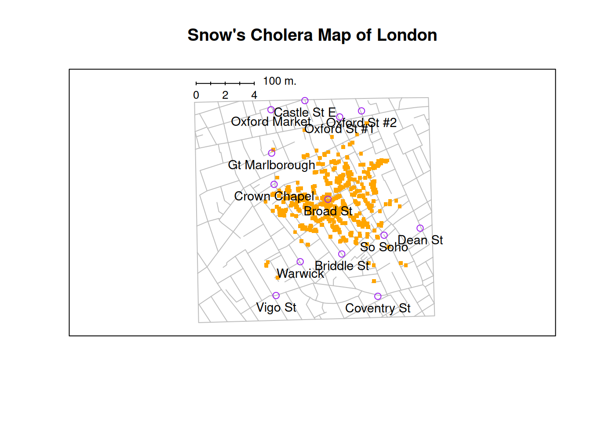
HistData package (Friendly, 2011), and was drawn using minor alterations to the commands provided in the help files. Note that Snow’s original hand drawn map used different symbols and labels, but you get the idea.
Above all else show the data.
— Edward Tufte
The origin of this quote is Tufte’s lovely book The Visual Display of Quantitative Information.
Visualising data is one of the most important tasks facing the data analyst. It’s important for two distinct but closely related reasons. Firstly, there’s the matter of drawing “presentation graphics”: displaying your data in a clean, visually appealing fashion makes it easier for your reader to understand what you’re trying to tell them. Equally important, perhaps even more important, is the fact that drawing graphs helps you to understand the data. To that end, it’s important to draw “exploratory graphics” that help you learn about the data as you go about analysing it. These points might seem pretty obvious, but I cannot count the number of times I’ve seen people forget them.
To give a sense of the importance of this chapter, I want to start with a classic illustration of just how powerful a good graph can be. To that end, Figure 6.1 shows a redrawing of one of the most famous data visualisations of all time: John Snow’s 1854 map of cholera deaths. The map is elegant in its simplicity. In the background we have a street map, which helps orient the viewer. Over the top, we see a large number of small dots, each one representing the location of a cholera case. The larger symbols show the location of water pumps, labelled by name. Even the most casual inspection of the graph makes it very clear that the source of the outbreak is almost certainly the Broad Street pump. Upon viewing this graph, Dr Snow arranged to have the handle removed from the pump, ending the outbreak that had killed over 500 people. Such is the power of a good data visualisation.

HistData package (Friendly, 2011), and was drawn using minor alterations to the commands provided in the help files. Note that Snow’s original hand drawn map used different symbols and labels, but you get the idea.
The goals in this chapter are twofold: firstly, to discuss several fairly standard graphs that we use a lot when analysing and presenting data, and secondly, to show you how to create these graphs in R. The graphs themselves tend to be pretty straightforward, so in that respect this chapter is pretty simple. Where people usually struggle is learning how to produce graphs, and especially, learning how to produce good graphs.1 Fortunately, learning how to draw graphs in R is reasonably simple, as long as you’re not too picky about what your graph looks like. What I mean when I say this is that R has a lot of very good graphing functions, and most of the time you can produce a clean, high-quality graphic without having to learn very much about the low-level details of how R handles graphics. Unfortunately, on those occasions when you do want to do something non-standard, or if you need to make highly specific changes to the figure, you actually do need to learn a fair bit about these details; and those details are both complicated and boring. With that in mind, the structure of this chapter is as follows: I’ll start out by giving you a very quick overview of how graphics work in R. I’ll then discuss several different kinds of graph and how to draw them, as well as showing the basics of how to customise these plots. I’ll then talk in more detail about R graphics, mentioning some of the more advanced tools that R provides to help you customise your figures, before finally talking a little about how to save your images.
1 I should add that this isn’t unique to R. Like everything in R there’s a pretty steep learning curve to learning how to draw graphs, and like always there’s a massive payoff at the end in terms of the quality of what you can produce. But to be honest, I’ve seen the same problems show up regardless of what system people use. I suspect that the hardest thing to do is to force yourself to take the time to think deeply about what your graphs are doing. I say that in full knowledge that only about half of my graphs turn out as well as they ought to. Understanding what makes a good graph is easy: actually designing a good graph is hard.
Reduced to its simplest form, you can think of an R graphic as being much like a painting. You start out with an empty canvas. Every time you use a graphics function, it paints some new things onto your canvas. Later on, you can paint more things over the top if you want; but just like painting, you can’t “undo” your strokes. If you make a mistake, you have to throw away your painting and start over. Fortunately, this is way more easy to do when using R than it is when painting a picture in real life: you delete the plot and then type a new set of commands.2 This way of thinking about drawing graphs is referred to as the painter’s model. So far, this probably doesn’t sound particularly complicated, and for the vast majority of graphs you’ll want to draw it’s exactly as simple as it sounds. Much like painting in real life, the headaches usually start when we dig into details. To see why, I’ll expand this “painting metaphor” a bit further just to show you the basics of what’s going on under the hood, but before I do I want to stress that you really don’t need to understand all these complexities in order to draw graphs. I’d been using R for years before I even realised that most of these issues existed! However, I don’t want you to go through the same pain I went through every time I inadvertently discovered one of these things, so here’s a quick overview.
2 Or, since you can always use the up and down keys to scroll through your recent command history, you can just pull up your most recent commands and edit them to fix your mistake. It becomes even easier once you start using scripts (Basic programming), since all you have to do is edit your script and then run it again.
Firstly, if you want to paint a picture, you need to paint it on something. In real life, you can paint on lots of different things. Painting onto canvas isn’t the same as painting onto paper, and neither one is the same as painting on a wall. In R, the thing that you paint your graphic onto is called a device. For most applications that we’ll look at in this book, this “device” will be a window on your computer. If you’re using Windows as your operating system, then the name for this device is windows; on a Mac it’s called quartz because that’s the name of the software that the Mac OS uses to draw pretty pictures; and on Linux/Unix, you’re probably using X11. On the other hand, if you’re using Rstudio (regardless of which operating system you’re on), there’s a separate device called RStudioGD that forces R to paint inside the “plots” panel in Rstudio. However, from the computer’s perspective there’s nothing terribly special about drawing pictures on screen: and so R is quite happy to paint pictures directly into a file. R can paint several different types of image files: jpeg, png, pdf, postscript, tiff and bmp files are all among the options that you have available to you. For the most part, these different devices all behave the same way, so you don’t really need to know much about the differences between them when learning how to draw pictures. But, just like real life painting, sometimes the specifics do matter. Unless stated otherwise, you can assume that I’m drawing a picture on screen, using the appropriate device (i.e., windows, quartz, X11 or RStudioGD). On the rare occasions where these behave differently from one another, I’ll try to point it out in the text.
Secondly, when you paint a picture you need to paint it with something. Maybe you want to do an oil painting, but maybe you want to use watercolour. And, generally speaking, you pretty much have to pick one or the other. The analog to this in R is a “graphics system”. A graphics system defines a collection of very low-level graphics commands about what to draw and where to draw it. Something that surprises most new R users is the discovery that R actually has two completely independent graphics systems, known as traditional graphics (in the graphics package) and grid graphics (in the grid package).3 Not surprisingly, the traditional graphics system is the older of the two: in fact, it’s actually older than R since it has its origins in S, the system from which R is descended. Grid graphics are newer, and in some respects more powerful, so many of the more recent, fancier graphical tools in R make use of grid graphics. However, grid graphics are somewhat more complicated beasts, so most people start out by learning the traditional graphics system. Nevertheless, as long as you don’t want to use any low-level commands yourself, then you don’t really need to care about whether you’re using traditional graphics or grid graphics. However, the moment you do want to tweak your figure by using some low-level commands you do need to care. Because these two different systems are pretty much incompatible with each other, there’s a pretty big divide in the R graphics universe. Unless stated otherwise, you can assume that everything I’m saying pertains to traditional graphics.
3 Of course, even that is a slightly misleading description, since some R graphics tools make use of external graphical rendering systems like OpenGL (e.g., the rgl package). I absolutely will not be talking about OpenGL or the like in this book, but as it happens there is one graph in this book that relies on them: the multiple regression figure in Linear regression.
Thirdly, a painting is usually done in a particular style. Maybe it’s a still life, maybe it’s an impressionist piece, or maybe you’re trying to annoy me by pretending that cubism is a legitimate artistic style. Regardless, each artistic style imposes some overarching aesthetic and perhaps even constraints on what can (or should) be painted using that style. In the same vein, R has quite a number of different packages, each of which provide a collection of high-level graphics commands. A single high-level command is capable of drawing an entire graph, complete with a range of customisation options. Most but not all of the high-level commands that I’ll talk about in this book come from the graphics package itself, and so belong to the world of traditional graphics. These commands all tend to share a common visual style, although there are a few graphics that I’ll use that come from other packages that differ in style somewhat. On the other side of the great divide, the grid universe relies heavily on two different packages – lattice and ggplot2 – each of which provides a quite different visual style. As you’ve probably guessed, there’s a whole separate bunch of functions that you’d need to learn if you want to use lattice graphics or make use of ggplot2. However, for the purposes of this book I’ll restrict myself to talking about the basic graphics tools.
At this point, I think we’ve covered more than enough background material. The point that I’m trying to make by providing this discussion isn’t to scare you with all these horrible details, but rather to try to convey to you the fact that R doesn’t really provide a single coherent graphics system. Instead, R itself provides a platform, and different people have built different graphical tools using that platform. As a consequence of this fact, there’s two different universes of graphics, and a great multitude of packages that live in them. At this stage you don’t need to understand these complexities, but it’s useful to know that they’re there. But for now, I think we can be happy with a simpler view of things: we’ll draw pictures on screen using the traditional graphics system, and as much as possible we’ll stick to high level commands only.
So let’s start painting.
Before I discuss any specialised graphics, let’s start by drawing a few very simple graphs just to get a feel for what it’s like to draw pictures using R. To that end, let’s create a small vector Fibonacci that contains a few numbers we’d like R to draw for us. Then, we’ll ask R to plot() those numbers:
Fibonacci <- c(1, 1, 2, 3, 5, 8, 13)
plot(Fibonacci)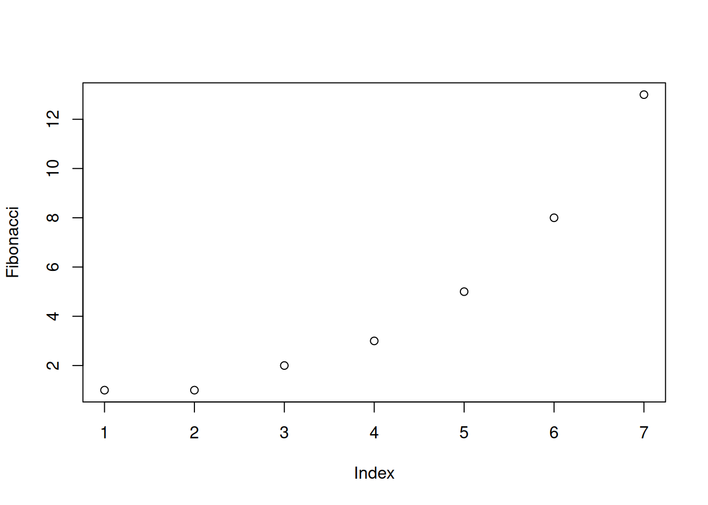
As you can see, what R has done is plot the values stored in the Fibonacci variable on the vertical axis (y-axis) and the corresponding index on the horizontal axis (x-axis). In other words, since the 4th element of the vector has a value of 3, we get a dot plotted at the location (4,3). That’s pretty straightforward, and the image in Figure 6.2 is probably pretty close to what you would have had in mind when I suggested that we plot the Fibonacci data. However, there’s quite a lot of customisation options available to you, so we should probably spend a bit of time looking at some of those options. So, be warned: this ends up being a fairly long section, because there’s so many possibilities open to you. Don’t let it overwhelm you though… while all of the options discussed here are handy to know about, you can get by just fine only knowing a few of them. The only reason I’ve included all this stuff right at the beginning is that it ends up making the rest of the chapter a lot more readable!
Before we go into any discussion of customising plots, we need a little more background. The important thing to note when using the plot() function, is that it’s another example of a generic function (Chapter 4), much like print() and summary(), and so its behaviour changes depending on what kind of input you give it. However, the plot() function is somewhat fancier than the other two, and its behaviour depends on two arguments, x (the first input, which is required) and y (which is optional). This makes it (a) extremely powerful once you get the hang of it, and (b) hilariously unpredictable, when you’re not sure what you’re doing. As much as possible, I’ll try to make clear what type of inputs produce what kinds of outputs. For now, however, it’s enough to note that I’m only doing very basic plotting, and as a consequence all of the work is being done by the plot.default() function.
What kinds of customisations might we be interested in? If you look at the help documentation for the default plotting method (i.e., type ?plot.default or help("plot.default")) you’ll see a very long list of arguments that you can specify to customise your plot. I’ll talk about several of them in a moment, but first I want to point out something that might seem quite wacky. When you look at all the different options that the help file talks about, you’ll notice that some of the options that it refers to are “proper” arguments to the plot.default() function, but it also goes on to mention a bunch of things that look like they’re supposed to be arguments, but they’re not listed in the “Usage” section of the file, and the documentation calls them graphical parameters instead. Even so, it’s usually possible to treat them as if they were arguments of the plotting function. Very odd. In order to stop my readers trying to find a brick and look up my home address, I’d better explain what’s going on; or at least give the basic gist behind it.
What exactly is a graphical parameter? Basically, the idea is that there are some characteristics of a plot which are pretty universal: for instance, regardless of what kind of graph you’re drawing, you probably need to specify what colour to use for the plot, right? So you’d expect there to be something like a col argument to every single graphics function in R? Well, sort of. In order to avoid having hundreds of arguments for every single function, what R does is refer to a bunch of these “graphical parameters” which are pretty general purpose. Graphical parameters can be changed directly by using the low-level par() function, which I discuss briefly in Section 6.7.1 though not in a lot of detail. If you look at the help files for graphical parameters (i.e., type ?par) you’ll see that there’s lots of them. Fortunately, (a) the default settings are generally pretty good so you can ignore the majority of the parameters, and (b) as you’ll see as we go through this chapter, you very rarely need to use par() directly, because you can “pretend” that graphical parameters are just additional arguments to your high-level function (e.g. plot.default()). In short… yes, R does have these wacky “graphical parameters” which can be quite confusing. But in most basic uses of the plotting functions, you can act as if they were just undocumented additional arguments to your function.
One of the first things that you’ll find yourself wanting to do when customising your plot is to label it better. You might want to specify more appropriate axis labels, add a title or add a subtitle. The arguments that you need to specify to make this happen are:
main. A character string containing the title.sub. A character string containing the subtitle.xlab. A character string containing the x-axis label.ylab. A character string containing the y-axis label.These aren’t graphical parameters, they’re arguments to the high-level function. However, because the high-level functions all rely on the same low-level function to do the drawing4 the names of these arguments are identical for pretty much every high-level function I’ve come across. Let’s have a look at what happens when we make use of all these arguments. Here’s the command…
4 The low-level function that does this is called title() in case you ever need to know, and you can type ?title to find out a bit more detail about what these arguments do.
plot(
x = Fibonacci,
main = "You specify title using the 'main' argument",
sub = "The subtitle appears here! (Use the 'sub' argument for this)",
xlab = "The x-axis label is 'xlab'",
ylab = "The y-axis label is 'ylab'"
)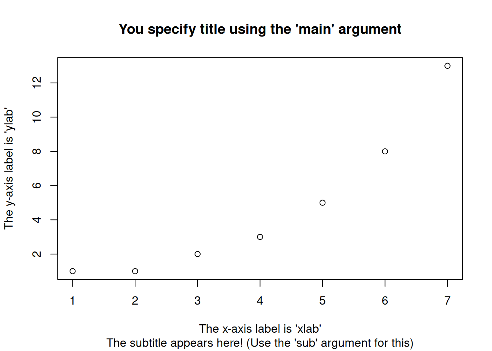
The picture that this draws is shown in Figure 6.3. It’s more or less as you’d expect. The plot itself is identical to the one we drew in Figure 6.2, except for the fact that we’ve changed the axis labels, and added a title and a subtitle. Even so, there’s a couple of interesting features worth calling your attention to. Firstly, notice that the subtitle is drawn below the plot, which I personally find annoying; as a consequence I almost never use subtitles. You may have a different opinion, of course, but the important thing is that you remember where the subtitle actually goes. Secondly, notice that R has decided to use boldface text and a larger font size for the title. This is one of my most hated default settings in R graphics, since I feel that it draws too much attention to the title. Generally, while I do want my reader to look at the title, I find that the R defaults are a bit overpowering, so I often like to change the settings. To that end, there are a bunch of graphical parameters that you can use to customise the font style:
font.main, font.sub, font.lab, font.axis. These four parameters control the font style used for the plot title (font.main), the subtitle (font.sub), the axis labels (font.lab: note that you can’t specify separate styles for the x-axis and y-axis without using low level commands), and the numbers next to the tick marks on the axis (font.axis). Somewhat irritatingly, these arguments are numbers instead of meaningful names: a value of 1 corresponds to plain text, 2 means boldface, 3 means italic and 4 means bold italic.col.main, col.sub, col.lab, col.axis. These parameters do pretty much what the name says: each one specifies a colour in which to type each of the different bits of text. Conveniently, R has a very large number of named colours (type colours() to see a list of over 650 colour names that R knows), so you can use the English language name of the colour to select it.5 Thus, the parameter value here is a string like "red", "gray25" or "springgreen4" (yes, R really does recognise four different shades of “spring green”).cex.main, cex.sub, cex.lab, cex.axis. Font size is handled in a slightly curious way in R. The “cex” part here is short for “character expansion”, and it’s essentially a magnification value. By default, all of these are set to a value of 1, except for the font title: cex.main has a default magnification of 1.2, which is why the title font is 20% bigger than the others.family. This argument specifies a font family to use: the simplest way to use it is to set it to "sans", "serif", or "mono", corresponding to a sans serif font, a serif font, or a monospaced font. If you want to, you can give the name of a specific font, but keep in mind that different operating systems use different fonts, so it’s probably safest to keep it simple. Better yet, unless you have some deep objections to the R defaults, just ignore this parameter entirely. That’s what I usually do.5 On the off chance that this isn’t enough freedom for you, you can select a colour directly as a “red, green, blue” specification using the rgb() function, or as a “hue, saturation, value” specification using the hsv() function.
To give you a sense of how you can use these parameters to customise your titles, the following command can be used to draw Figure 6.4:
plot(
x = Fibonacci, # the data to plot
main = "The first 7 Fibonacci numbers", # the title
xlab = "Position in the sequence", # x-axis label
ylab = "The Fibonacci number", # y-axis label
font.main = 1, # plain text for title
cex.main = 1, # normal size for title
font.axis = 2, # bold text for numbering
col.lab = "gray50" # grey colour for labels
)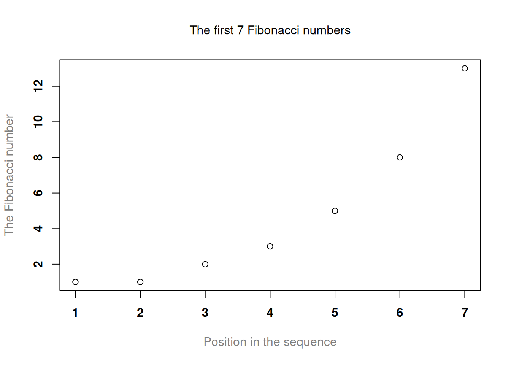
Although this command is quite long, it’s not complicated: all it does is override a bunch of the default parameter values. The only difficult aspect to this is that you have to remember what each of these parameters is called, and what all the different values are. And in practice I never remember: I have to look up the help documentation every time, or else look it up in this book.
Adding and customising the titles associated with the plot is one way in which you can play around with what your picture looks like. Another thing that you’ll want to do is customise the appearance of the actual plot! To start with, let’s look at the single most important option that the plot() function (or, recalling that we’re dealing with a generic function, in this case the plot.default() function, since that’s the one doing all the work) provides for you to use, which is the type argument. The type argument specifies the visual style of the plot. The possible values for this are:
type = "p". Draw the points only.type = "l". Draw a line through the points.type = "o". Draw the line over the top of the points.type = "b". Draw both points and lines, but don’t overplot.type = "h". Draw “histogram-like” vertical bars.type = "s". Draw a staircase, going horizontally then vertically.type = "S". Draw a Staircase, going vertically then horizontally.type = "c". Draw only the connecting lines from the “b” version.type = "n". Draw nothing. (Apparently this is useful sometimes?)The simplest way to illustrate what each of these really looks like is just to draw them. To that end, Figure 6.5 shows the same Fibonacci data, drawn using six different types of plot. As you can see, by altering the type argument you can get a qualitatively different appearance to your plot. In other words, as far as R is concerned, the only difference between a scatterplot (like the ones we drew in Section 5.7) and a line plot is that you draw a scatterplot by setting type = "p" and you draw a line plot by setting type = "l". However, that doesn’t imply that you should think of them as being equivalent to each other. As you can see by looking at Figure 6.5, a line plot implies that there is some notion of continuity from one point to the next, whereas a scatterplot does not.
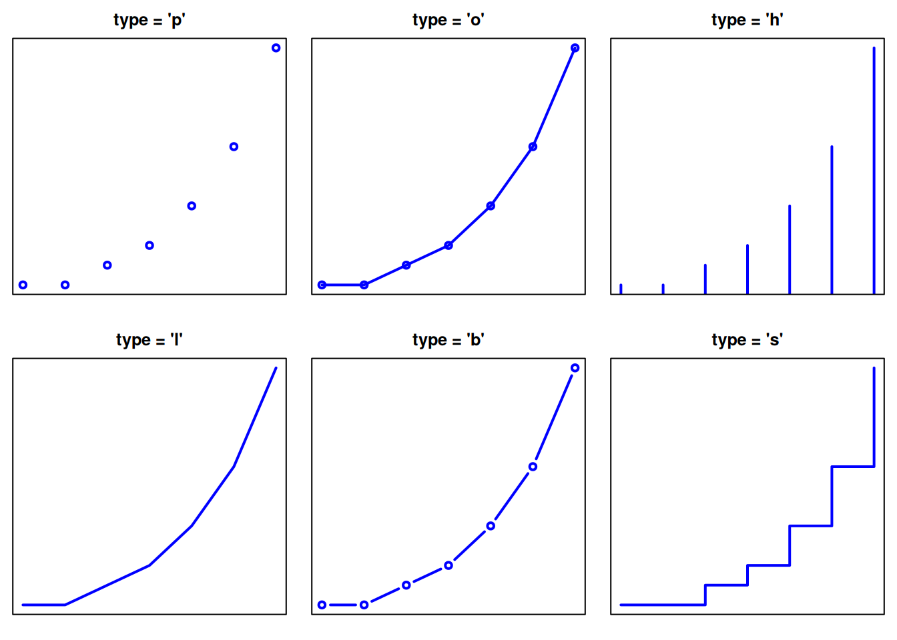
type of the plot.
In Section 6.2.2 we talked about a group of graphical parameters that are related to the formatting of titles, axis labels etc. The second group of parameters I want to discuss are those related to the formatting of the plot itself:
col. As we saw with the previous colour-related parameters, the simplest way to specify this parameter is using a character string: e.g., col = "blue". It’s a pretty straightforward parameter to specify: the only real subtlety is that every high-level function tends to draw a different “thing” as its output, and so this parameter gets interpreted a little differently by different functions. However, for the plot.default() function it’s pretty simple: the col argument refers to the colour of the points and/or lines that get drawn!pch. The plot character parameter is a number, usually between 1 and 25. What it does is tell R what symbol to use to draw the points that it plots. The simplest way to illustrate what the different values do is with a picture. Figure 6.6 shows the first 25 plotting characters in panel (a). The default plotting character is a hollow circle (i.e., pch = 1).cex. This parameter describes a character expansion factor (i.e., magnification) for the plotted characters. By default cex = 1, but if you want bigger symbols in your graph you should specify a larger value.lty. The line type parameter describes the kind of line that R draws. It has seven values which you can specify using a number between 0 and 7, or using a meaningful character string: "blank", "solid", "dashed", "dotted", "dotdash", "longdash", or "twodash". Note that the “blank” version (value 0) just means that R doesn’t draw the lines at all. The other six versions are shown in panel (b) of Figure 6.6.lwd. The last graphical parameter in this category that I want to mention is the line width parameter, which is just a number specifying the width of the line. The default value is 1. Not surprisingly, larger values produce thicker lines and smaller values produce thinner lines. Try playing around with different values of lwd to see what happens.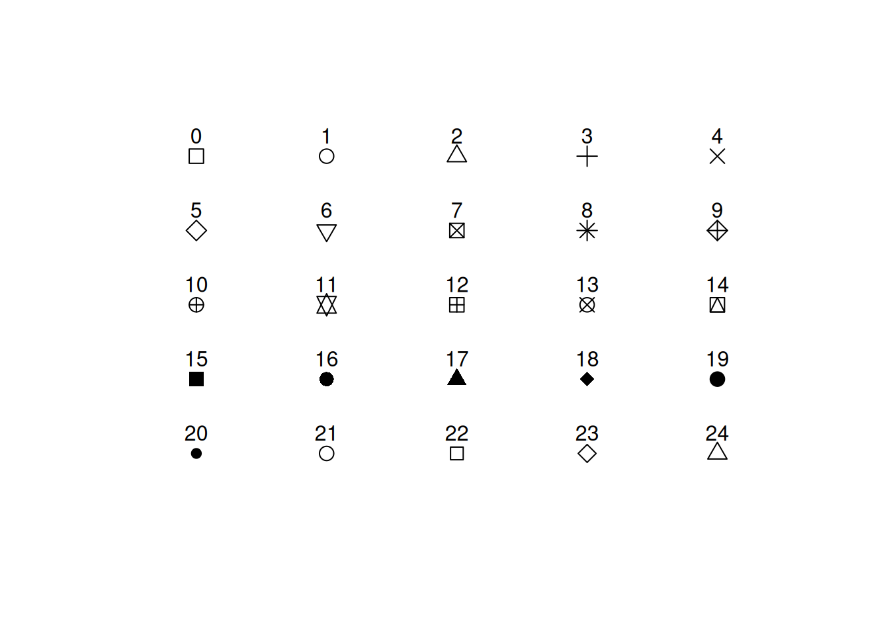
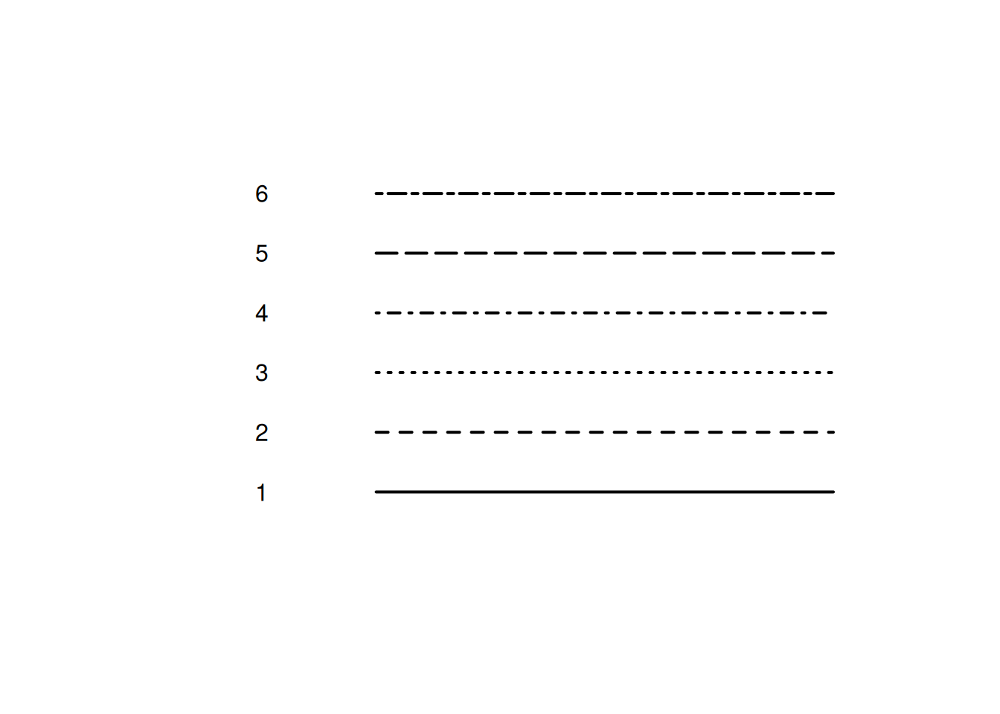
pch parameter (panel a) or the lty parameter (panel b).
To illustrate what you can do by altering these parameters, let’s try the following command:
plot(
x = Fibonacci, # the data set
type = "b", # plot both points and lines
col = "blue", # change the plot colour to blue
pch = 19, # plotting character is a solid circle
cex = 5, # plot it at 5x the usual size
lty = 2, # change line type to dashed
lwd = 4 # change line width to 4x the usual
)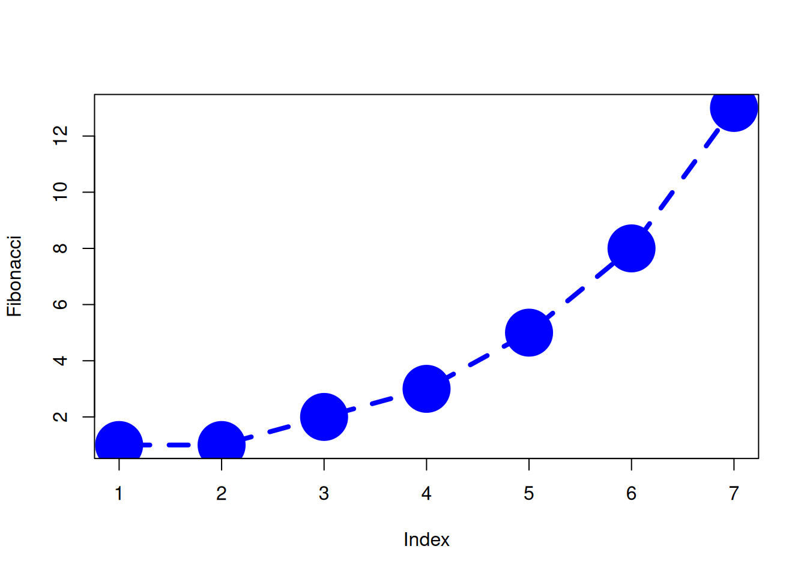
The output is shown in Figure 6.7.
There are several other possibilities worth discussing. Ignoring graphical parameters for the moment, there’s a few other arguments to the plot.default() function that you might want to use. As before, many of these are standard arguments that are used by a lot of high level graphics functions:
xlim, ylim. Generally R does a pretty good job of figuring out where to set the edges of the plot. However, you can override its choices by setting the xlim and ylim arguments. For instance, if I decide I want the vertical scale of the plot to run from 0 to 100, then I’d set ylim = c(0, 100).ann. This is a logical-valued argument that you can use if you don’t want R to include any text for a title, subtitle or axis label. To do so, set ann = FALSE. This will stop R from including any text that would normally appear in those places. Note that this will override any of your manual titles. For example, if you try to add a title using the main argument, but you also specify ann = FALSE, no title will appear.axes. Again, this is a logical valued argument. Suppose you don’t want R to draw any axes at all. To suppress the axes, all you have to do is add axes = FALSE. This will remove the axes and the numbering, but not the axis labels (i.e. the xlab and ylab text). Note that you can get finer grain control over this by specifying the xaxt and yaxt graphical parameters instead (see below).frame.plot. Suppose you’ve removed the axes by setting axes = FALSE, but you still want to have a simple box drawn around the plot; that is, you only wanted to get rid of the numbering and the tick marks, but you want to keep the box. To do that, you set frame.plot = TRUE.Note that this list isn’t exhaustive. There are a few other arguments to the plot.default function that you can play with if you want to, but those are the ones you are probably most likely to want to use. As always, however, if these aren’t enough options for you, there’s also a number of other graphical parameters that you might want to play with as well. That’s the focus of the next section. In the meantime, here’s a command that makes use of all these different options:
plot(
x = Fibonacci, # the data
xlim = c(0, 15), # expand the x-scale
ylim = c(0, 15), # expand the y-scale
ann = FALSE, # delete all annotations
axes = FALSE, # delete the axes
frame.plot = TRUE # but include a framing box
)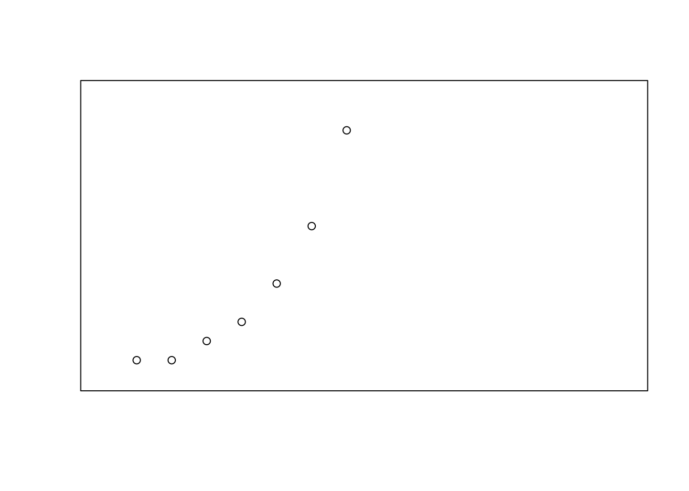
The output is shown in Figure 6.8, and it’s pretty much exactly as you’d expect. The axis scales on both the horizontal and vertical dimensions have been expanded, the axes have been suppressed as have the annotations, but I’ve kept a box around the plot.
Before moving on, I should point out that there are several graphical parameters relating to the axes, the box, and the general appearance of the plot which allow finer grain control over the appearance of the axes and the annotations.
xaxt, yaxt. These graphical parameters are basically just fancier versions of the axes argument we discussed earlier. If you want to stop R from drawing the vertical axis but you’d like it to keep the horizontal axis, set yaxt = "n". I trust that you can figure out how to keep the vertical axis and suppress the horizontal one!bty. In the same way that xaxt, yaxt are just fancy versions of axes, the box type parameter is really just a fancier version of the frame.plot argument, allowing you to specify exactly which out of the four borders you want to keep. The way we specify this parameter is a bit stupid, in my opinion: the possible values are "o" (the default), "l", "7", "c", "u", or "]", each of which will draw only those edges that the corresponding character suggests. That is, the letter "c" has a top, a bottom and a left, but is blank on the right hand side, whereas "7" has a top and a right, but is blank on the left and the bottom. Alternatively a value of "n" means that no box will be drawn.las. I presume that the name of this parameter is an acronym of label style or something along those lines; but what it actually does is govern the orientation of the text used to label the individual tick marks (i.e., the numbering, not the xlab and ylab axis labels). There are four possible values for las: A value of 0 means that the labels of both axes are printed parallel to the axis itself (the default). A value of 1 means that the text is always horizontal. A value of 2 means that the labelling text is printed at right angles to the axis. Finally, a value of 3 means that the text is always vertical.Again, these aren’t the only possibilities. There are a few other graphical parameters that I haven’t mentioned that you could use to customise the appearance of the axes,6 but that’s probably enough (or more than enough) for now. To give a sense of how you could use these parameters, let’s try the following command:
6 Also, there’s a low level function called axis() that allows a lot more control over the appearance of the axes.
plot(
x = Fibonacci, # the data
xaxt = "n", # don't draw the x-axis
bty = "]", # keep bottom, right and top of box only
las = 1 # rotate the text
)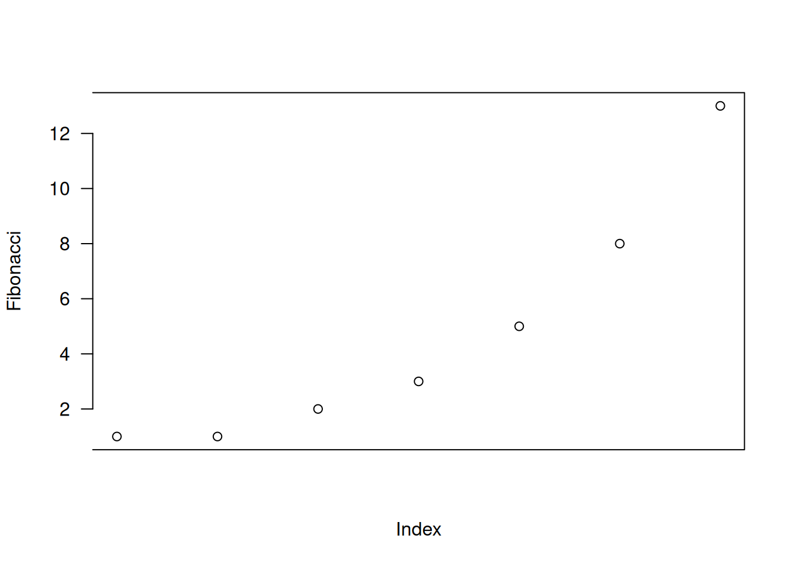
The output is shown in Figure 6.9. As you can see, this isn’t a very useful plot at all. However, it does illustrate the graphical parameters we’re talking about, so I suppose it serves its purpose.
At this point, a lot of readers will probably be thinking something along the lines of, “if there’s this much detail just for drawing a simple plot, how horrible is it going to get when we start looking at more complicated things?” Perhaps, contrary to my earlier pleas for mercy, you’ve found a brick to hurl and are right now leafing through an Adelaide phone book trying to find my address.7 Well, fear not! And please, put the brick down. In a lot of ways, we’ve gone through the hardest part: we’ve already covered the vast majority of the plot customisations that you might want to do. As you’ll see, each of the other high level plotting commands we’ll talk about will only have a smallish number of additional options. Better yet, even though I’ve told you about a billion different ways of tweaking your plot, you don’t usually need them. So in practice, now that you’ve read over it once to get the gist, the majority of the content of this section is stuff you can safely forget: just remember to come back to this section later on when you want to tweak your plot.
7 This will not be very effective in 2026 because phone books barely even exist anymore, and also I live in Sydney.
Now that we’ve tamed (or possibly fled from) the beast that is R graphical parameters, let’s talk more seriously about some real life graphics that you’ll want to draw. We begin with the humble histogram. Histograms are one of the simplest and most useful ways of visualising data. They make most sense when you have an interval or ratio scale (e.g., the afl_margins data from Chapter 5) and what you want to do is get an overall impression of the data. Most of you probably know how histograms work, since they’re so widely used, but for the sake of completeness I’ll describe them. All you do is divide up the possible values into bins, and then count the number of observations that fall within each bin. This count is referred to as the frequency of the bin, and is displayed as a bar: in the AFL winning margins data, there are 33 games in which the winning margin was less than 10 points, and it is this fact that is represented by the height of the leftmost bar in Figure 6.10. Drawing this histogram in R is pretty straightforward. The function you need to use is called hist(), and it has pretty reasonable default settings. In fact, Figure 6.10 is exactly what you get if you just type this:
hist(afl_margins)
afl_margins data.
Although this image would need a lot of cleaning up in order to make a good presentation graphic (i.e., one you’d include in a report), it nevertheless does a pretty good job of describing the data. In fact, the big strength of a histogram is that (properly used) it does show the entire spread of the data, so you can get a pretty good sense about what it looks like. The downside to histograms is that they aren’t very compact: unlike some of the other plots I’ll talk about it’s hard to cram 20-30 histograms into a single image without overwhelming the viewer. And of course, if your data are nominal scale (e.g., the afl_finalists data) then histograms are useless.
The main subtlety that you need to be aware of when drawing histograms is determining where the breaks that separate bins should be located, and (relatedly) how many breaks there should be. In Figure 6.10, you can see that R has made pretty sensible choices all by itself: the breaks are located at 0, 10, 20, … 120, which is exactly what I would have done had I been forced to make a choice myself. On the other hand, consider the two histograms in Figure 6.11, which I produced using the following two commands:
hist(x = afl_margins, breaks = 3)
hist(x = afl_margins, breaks = 0:116)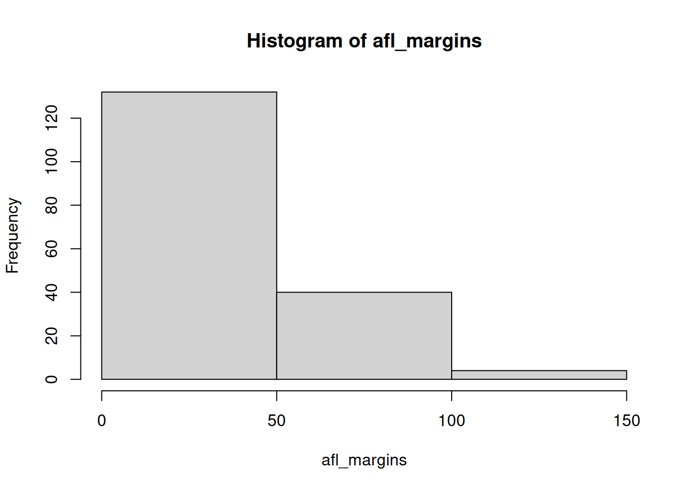
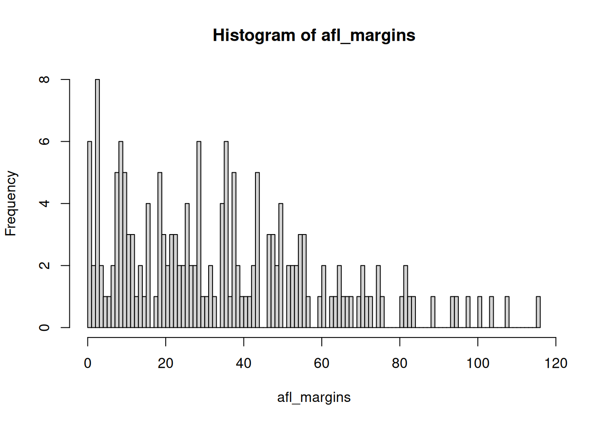
afl_margins variable: one with too few bins (left), and one with too many (right).
In the right-hand panel of Figure 6.11, the bins are only 1 point wide. As a result, although the plot is very informative (it displays the entire data set with no loss of information at all!) the plot is very hard to interpret, and feels quite cluttered. On the other hand, the plot in the left-hand panel has a bin width of 50 points, and has the opposite problem: it’s very easy to “read” this plot, but it doesn’t convey a lot of information. One gets the sense that this histogram is hiding too much. In short, the way in which you specify the breaks has a big effect on what the histogram looks like, so it’s important to make sure you choose the breaks sensibly. In general R does a pretty good job of selecting the breaks on its own, since it makes use of some quite clever tricks that statisticians have devised for automatically selecting the right bins for a histogram, but nevertheless it’s usually a good idea to play around with the breaks a bit to see what happens.
There is one fairly important thing to add regarding how the breaks argument works. There are two different ways you can specify the breaks. You can either specify how many breaks you want (which is what I did for the left-hand panel above when I typed breaks = 3) and let R figure out where they should go, or you can provide a vector that tells R exactly where the breaks should be placed (which is what I did for the right-hand panel when I typed breaks = 0:116). The behaviour of the hist() function is slightly different depending on which version you use. If all you do is tell it how many breaks you want, R treats it as a “suggestion” not as a demand. It assumes you want “approximately 3” breaks, but if it doesn’t think that this would look very pretty on screen, it picks a different (but similar) number. It does this for a sensible reason – it tries to make sure that the breaks are located at sensible values (like 10) rather than stupid ones (like 7.224414). And most of the time R is right: usually, when a human researcher says “give me 3 breaks”, he or she really does mean “give me approximately 3 breaks, and don’t put them in stupid places”. However, sometimes R is dead wrong. Sometimes you really do mean “exactly 3 breaks”, and you know precisely where you want them to go. So you need to invoke “real person privilege”, and order R to do what it’s bloody well told. In order to do that, you have to input the full vector that tells R exactly where you want the breaks. If you do that, R will go back to behaving like the nice little obedient calculator that it’s supposed to be.
Okay, so at this point we can draw a basic histogram, and we can alter the number and even the location of the breaks. However, the visual style of the histograms shown so far could stand to be improved. We can fix this by making use of some of the other arguments to the hist() function. Most of the things you might want to try doing have already been covered in Section 6.2, but there’s a few new things:
density, angle. You can add diagonal lines to shade the bars: the density value is a number indicating how many lines per inch R should draw (the default value of NULL means no lines), and the angle is a number indicating how many degrees from horizontal the lines should be drawn at (default is angle = 45 degrees).col, border. You can also change the colours: in this instance the col parameter sets the colour of the shading (either the shading lines if there are any, or else the colour of the interior of the bars if there are not), and the border argument sets the colour of the edges of the bars.labels. You can also attach labels to each of the bars using the labels argument. The simplest way to do this is to set labels = TRUE, in which case R will add a number just above each bar, that number being the exact number of observations in the bin. Alternatively, you can choose the labels yourself, by inputting a vector of strings, e.g., labels = c("label 1","label 2","etc").Not surprisingly, this doesn’t exhaust the possibilities. If you type help("hist") or ?hist and have a look at the help documentation for histograms, you’ll see a few more options. A histogram that makes use of the histogram-specific customisations as well as several of the options we discussed in Section 6.2 is shown in Figure 6.12. The R command that I used to draw it is this:
hist(
x = afl_margins,
main = "2010 AFL margins", # title of the plot
xlab = "Margin", # set the x-axis label
density = 10, # draw shading lines: 10 per inch
angle = 40, # set the angle of the shading lines is 40 degrees
border = "gray20", # set the colour of the borders of the bars
col = "gray80", # set the colour of the shading lines
labels = TRUE, # add frequency labels to each bar
ylim = c(0, 40) # change the scale of the y-axis
)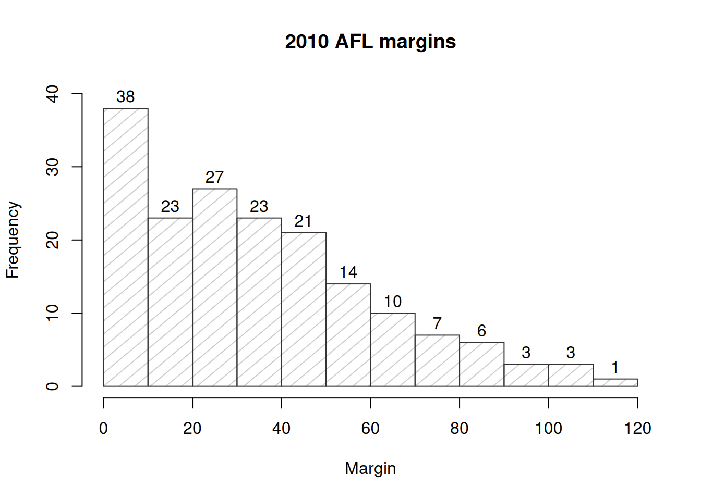
afl_margins data, using histogram-specific customisations.
Overall, this is a much nicer histogram than the default ones.
Histograms are one of the most widely used methods for displaying the observed values for a variable. They’re simple, pretty, and very informative. However, they do take a little bit of effort to draw. Sometimes it can be quite useful to make use of simpler, if less visually appealing, options. One such alternative is the stem and leaf plot. To a first approximation you can think of a stem and leaf plot as a kind of text-based histogram. Stem and leaf plots aren’t used as widely these days as they were 30 years ago, since it’s now just as easy to draw a histogram as it is to draw a stem and leaf plot. Not only that, they don’t work very well for larger data sets. As a consequence you probably won’t have as much of a need to use them yourself, though you may run into them in older publications. These days, the only real world situation where I use them is if I have a small data set with 20-30 data points and I don’t have a computer handy, because it’s pretty easy to quickly sketch a stem and leaf plot by hand.
With all that as background, lets have a look at stem and leaf plots. The AFL margins data contains 176 observations, which is at the upper end for what you can realistically plot this way. The function in R for drawing stem and leaf plots is called stem() and if we ask for a stem and leaf plot of the afl_margins data, here’s what we get:
stem(afl_margins)
The decimal point is 1 digit(s) to the right of the |
0 | 001111223333333344567788888999999
1 | 0000011122234456666899999
2 | 00011222333445566667788999999
3 | 01223555566666678888899
4 | 012334444477788899
5 | 00002233445556667
6 | 0113455678
7 | 01123556
8 | 122349
9 | 458
10 | 148
11 | 6The values to the left of the | are called stems and the values to the right are called leaves. If you just look at the shape that the leaves make, you can see something that looks a lot like a histogram made out of numbers, just rotated by 90 degrees. But if you know how to read the plot, there’s quite a lot of additional information here. In fact, it’s also giving you the actual values of all of the observations in the data set. To illustrate, let’s have a look at the last line in the stem and leaf plot, namely 11 | 6. Specifically, let’s compare this to the largest value of the afl_margins data set:
max(afl_margins)[1] 116Hm… 11 | 6 versus 116. Obviously the stem and leaf plot is trying to tell us that the largest value in the data set is 116. Similarly, when we look at the line that reads 10 | 148, the way we interpret it is to note that the stem and leaf plot is telling us that the data set contains observations with values 101, 104 and 108. Finally, when we see something like 5 | 00002233445556667 the four 0s in the stem and leaf plot are telling us that there are four observations with value 50.
I won’t talk about them in a lot of detail, but I should point out that some customisation options are available for stem and leaf plots in R. The two arguments that you can use to do this are:
scale. Changing the scale of the plot (default value is 1), which is analogous to changing the number of breaks in a histogram. Reducing the scale causes R to reduce the number of stem values (i.e., the number of breaks, if this were a histogram) that the plot uses.width. The second way that you can customise a stem and leaf plot is to alter the width (default value is 80). Changing the width alters the maximum number of leaf values that can be displayed for any given stem.However, since stem and leaf plots aren’t as important as they used to be, I’ll leave it to the interested reader to investigate these options. Try the following two commands to see what happens:
stem(x = afl_margins, scale = .25)
stem(x = afl_margins, width = 20)The only other thing to note about stem and leaf plots is the line in which R tells you where the decimal point is. If our data set had included only the numbers .11, .15, .23, .35 and .59 and we’d drawn a stem and leaf plot of these data, then R would move the decimal point: the stem values would be 1,2,3,4 and 5, but R would tell you that the decimal point has moved to the left of the | symbol. If you want to see this in action, try the following command:
stem(x = afl_margins / 1000)The stem and leaf plot itself will look identical to the original one we drew, except for the fact that R will tell you that the decimal point has moved.
Another alternative to histograms is a boxplot, sometimes called a “box and whiskers” plot. Like histograms, they’re most suited to interval or ratio scale data. The idea behind a boxplot is to provide a simple visual depiction of the median, the interquartile range, and the range of the data. And because they do so in a fairly compact way, boxplots have become a very popular statistical graphic, especially during the exploratory stage of data analysis when you’re trying to understand the data yourself. Let’s have a look at how they work, again using the afl_margins data as our example. Firstly, let’s actually calculate these numbers ourselves using the summary() function:8
8 R being what it is, it’s no great surprise that there’s also a fivenum() function that does much the same thing.
summary(afl_margins) Min. 1st Qu. Median Mean 3rd Qu. Max.
0.00 12.75 30.50 35.30 50.50 116.00 So how does a boxplot capture these numbers? The easiest way to describe what a boxplot looks like is just to draw one. The function for doing this in R is (surprise, surprise) boxplot(). As always there’s a lot of optional arguments that you can specify if you want, but for the most part you can just let R choose the defaults for you. That said, I’m going to override one of the defaults to start with by specifying the range option, but for the most part you won’t want to do this (I’ll explain why in a minute). With that as preamble, let’s try the following command:
boxplot(x = afl_margins, range = 100)What R draws is shown in Figure 6.13, the most basic boxplot possible. When you look at this plot, this is how you should interpret it: the thick line in the middle of the box is the median; the box itself spans the range from the 25th percentile to the 75th percentile; and the “whiskers” cover the full range from the minimum value to the maximum value. Figure 6.14 summarises this by labelling each of these elements directly on the same plot.9
9 The original book draws this annotated version by hand, adding the labels and arrows outside R. The version shown here uses segments() and text() to add the same annotations programmatically instead.
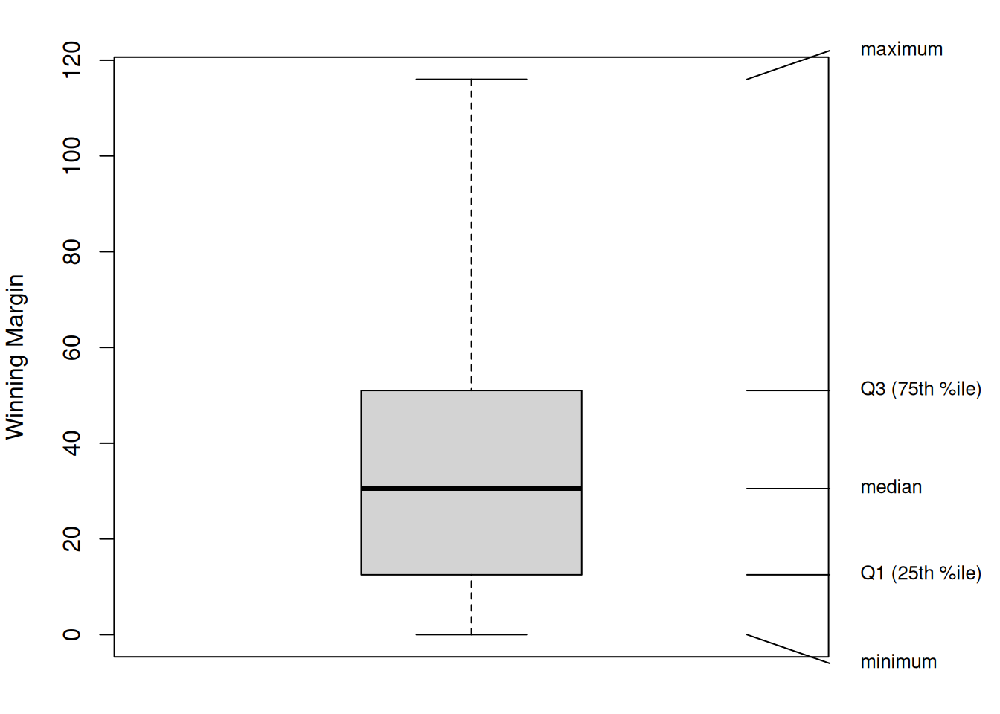
In practice, this isn’t quite how boxplots usually work. In most applications, the “whiskers” don’t cover the full range from minimum to maximum. Instead, they actually go out to the most extreme data point that doesn’t exceed a certain bound. By default, this value is 1.5 times the interquartile range, corresponding to a range value of 1.5. Any observation whose value falls outside this range is plotted as a circle instead of being covered by the whiskers, and is commonly referred to as an outlier. For our AFL margins data, there is one observation (a game with a margin of 116 points) that falls outside this range. As a consequence, the upper whisker is pulled back to the next largest observation (a value of 108), and the observation at 116 is plotted as a circle. This is illustrated in Figure 6.15. Since the default value is range = 1.5 we can draw this plot using the simple command
boxplot(afl_margins)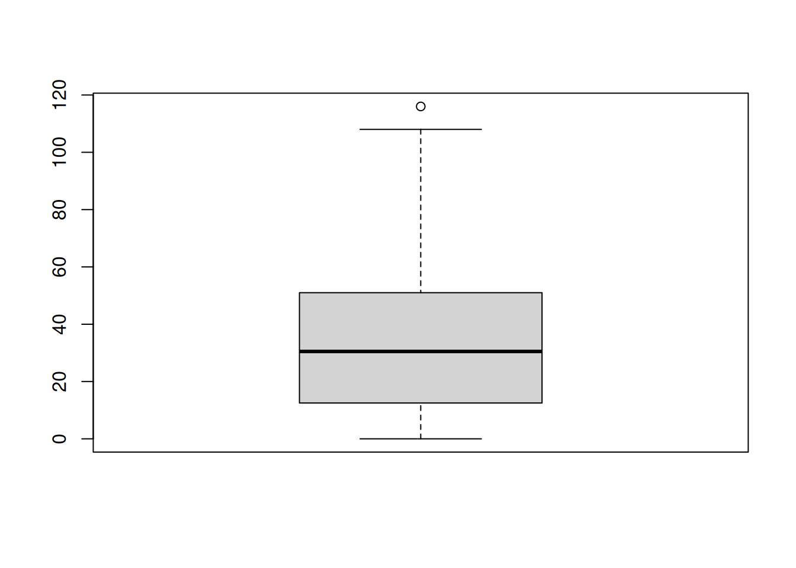
I’ll talk a little more about the relationship between boxplots and outliers in Section 6.5.2, but before I do let’s take the time to clean this figure up. Boxplots in R are extremely customisable. In addition to the usual range of graphical parameters that you can tweak to make the plot look nice, you can also exercise nearly complete control over every element of the plot. Consider the boxplot in Figure 6.16: in this version of the plot, not only have I added labels (xlab, ylab) and removed the stupid border (frame.plot), I’ve also dimmed all of the graphical elements of the boxplot except the central bar that plots the median (border) so as to draw more attention to the median rather than the rest of the boxplot. You’ve seen all these options in previous sections in this chapter, so hopefully those customisations won’t need any further explanation. However, I’ve done two new things as well: I’ve deleted the cross-bars at the top and bottom of the whiskers (known as the “staples” of the plot), and converted the whiskers themselves to solid lines. The arguments that I used to do this are called by the ridiculous names of staplewex and whisklty,10 and I’ll explain these in a moment. But first, here’s the actual command I used to draw this figure:
10 I realise there’s a kind of logic to the way R names are constructed, but they still sound dumb. When I typed this sentence, all I could think was that it sounded like the name of a kids movie if it had been written by Lewis Carroll: “The frabjous gambolles of Staplewex and Whisklty” or something along those lines.
boxplot(
x = afl_margins, # the data
xlab = "AFL games, 2010", # x-axis label
ylab = "Winning Margin", # y-axis label
border = "grey50", # dim the border of the box
frame.plot = FALSE, # don't draw a frame
staplewex = 0, # don't draw staples
whisklty = 1 # solid line for whisker
)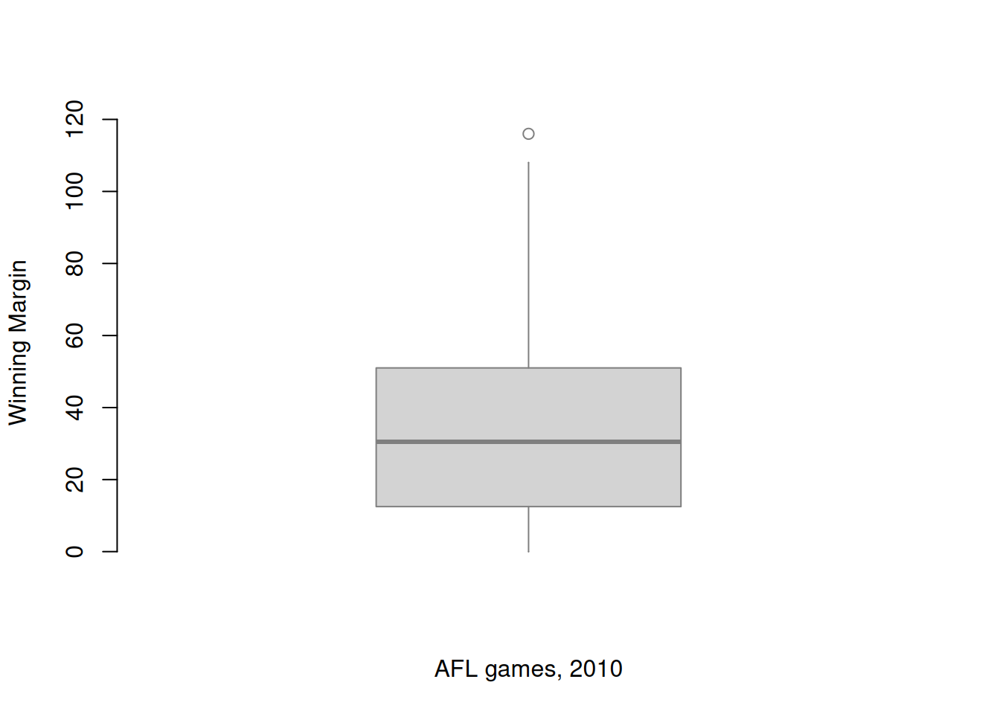
Overall, I think the resulting boxplot is a huge improvement in visual design over the default version. In my opinion at least, there’s a fairly minimalist aesthetic that governs good statistical graphics. Ideally, every visual element that you add to a plot should convey part of the message. If your plot includes things that don’t actually help the reader learn anything new, you should consider removing them. Personally, I can’t see the point of the cross-bars on a standard boxplot, so I’ve deleted them.
Okay, what commands can we use to customise the boxplot? If you type ?boxplot and flick through the help documentation, you’ll notice that it does mention staplewex as an argument, but there’s no mention of whisklty. The reason for this is that the function that handles the drawing is called bxp(), so if you type ?bxp all the gory details appear. Here’s the short summary. In order to understand why these arguments have such stupid names, you need to recognise that they’re put together from two components. The first part of the argument name specifies one part of the box plot: staple refers to the staples of the plot (i.e., the cross-bars), and whisk refers to the whiskers. The second part of the name specifies a graphical parameter: wex is a width parameter, and lty is a line type parameter. The parts of the plot you can customise are:
box. The box that covers the interquartile range.med. The line used to show the median.whisk. The vertical lines used to draw the whiskers.staple. The cross bars at the ends of the whiskers.out. The points used to show the outliers.The actual graphical parameters that you might want to specify are slightly different for each visual element, just because they’re different shapes from each other. As a consequence, the following options are available:
boxwex, staplewex, outwex. These are scaling factors that govern the width of various parts of the plot. The default scaling factor is (usually) 0.8 for the box, and 0.5 for the other two. Note that in the case of the outliers this parameter is meaningless unless you decide to draw lines plotting the outliers rather than use points.boxlty, medlty, whisklty, staplelty, outlty. These govern the line type for the relevant elements. The values for this are exactly the same as those used for the regular lty parameter, with two exceptions. There’s an additional option where you can set medlty = "blank" to suppress the median line completely (useful if you want to draw a point for the median rather than plot a line). Similarly, by default the outlier line type is set to outlty = "blank", because the default behaviour is to draw outliers as points instead of lines.boxlwd, medlwd, whisklwd, staplelwd, outlwd. These govern the line widths for the relevant elements, and behave the same way as the regular lwd parameter. The only thing to note is that the default value for medlwd is three times the value of the others.boxcol, medcol, whiskcol, staplecol, outcol. These govern the colour of the lines used to draw the relevant elements. Specify a colour in the same way that you usually do.boxfill. What colour should we use to fill the box?medpch, outpch. These behave like the regular pch parameter used to select the plot character. Note that you can set outpch = NA to stop R from plotting the outliers at all, and you can also set medpch = NA to stop it from drawing a character for the median (this is the default!)medcex, outcex. Size parameters for the points used to plot medians and outliers. These are only meaningful if the corresponding points are actually plotted. So for the default boxplot, which includes outlier points but uses a line rather than a point to draw the median, only the outcex parameter is meaningful.medbg, outbg. Again, the background colours are only meaningful if the points are actually plotted.Taken as a group, these parameters allow you almost complete freedom to select the graphical style for your boxplot that you feel is most appropriate to the data set you’re trying to describe. That said, when you’re first starting out there’s no shame in using the default settings! But if you want to master the art of designing beautiful figures, it helps to try playing around with these parameters to see what works and what doesn’t. Finally, I should mention a few other arguments that you might want to make use of:
horizontal. Set this to TRUE to display the plot horizontally rather than vertically.varwidth. Set this to TRUE to get R to scale the width of each box so that the areas are proportional to the number of observations that contribute to the boxplot. This is only useful if you’re drawing multiple boxplots at once (see Section 6.5.3).show.names. Set this to TRUE to get R to attach labels to the boxplots.notch. If you set notch = TRUE, R will draw little notches in the sides of each box. If the notches of two boxplots don’t overlap, then there is a “statistically significant” difference between the corresponding medians. If you haven’t read Hypothesis testing, ignore this argument – we haven’t discussed statistical significance, so this doesn’t mean much to you. I’m mentioning it only because you might want to come back to the topic later on. (see also the notch.frac option when you type ?bxp).Because the boxplot automatically (unless you change the range argument) separates out those observations that lie within a certain range, people often use them as an informal method for detecting outliers: observations that are “suspiciously” distant from the rest of the data. Here’s an example. Suppose that I’d drawn the boxplot for the AFL margins data, and it came up looking like Figure 6.17.
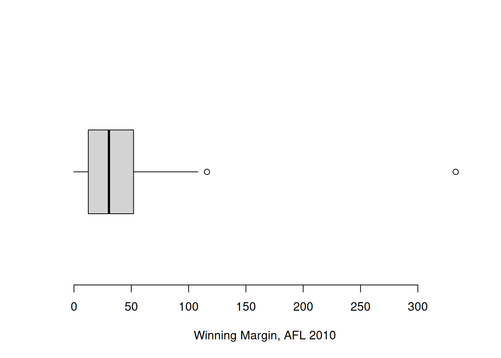
horizontal argument to draw it sideways in order to save space.
It’s pretty clear that something funny is going on with one of the observations. Apparently, there was one game in which the margin was over 300 points! That doesn’t sound right to me. Now that I’ve become suspicious, it’s time to look a bit more closely at the data. One function that can be handy for this is the which() function; it takes as input a vector of logicals, and outputs the indices of the TRUE cases. This is particularly useful in the current context because it lets me do this:
suspicious_cases <- afl_margins > 300
which(suspicious_cases)[1] 137although in real life I probably wouldn’t bother creating the suspicious_cases variable: I’d just cut out the middle man and use a command like which( afl_margins > 300 ). In any case, what this has done is shown me that the outlier corresponds to game 137. Then, I find the recorded margin for that game:
afl_margins[137][1] 333Hm. That definitely doesn’t sound right. So then I go back to the original data source (the internet!) and I discover that the actual margin of that game was 33 points. Now it’s pretty clear what happened. Someone must have typed in the wrong number. Easily fixed, just by typing afl_margins[137] <- 33.
afl_margins[137] <- 33While this might seem like a silly example, I should stress that this kind of thing actually happens a lot. Real world data sets are often riddled with stupid errors, especially when someone had to type something into a computer at some point. In fact, there’s actually a name for this phase of data analysis, since in practice it can waste a huge chunk of our time: data cleaning. It involves searching for typos, missing data and all sorts of other obnoxious errors in raw data files.11
11 Sometimes it’s convenient to have the boxplot automatically label the outliers for you. The original boxplot() function doesn’t allow you to do this; however, the Boxplot() function in the car package does. The design of the Boxplot() function is very similar to boxplot(). It just adds a few new arguments that allow you to tweak the labelling scheme. I’ll leave it to the reader to check this out.
12 Sort of. The game was played in Launceston, which is a de facto home away from home for Hawthorn.
13 Contrast this situation with the next largest winning margin in the data set, which was Geelong’s 108 point demolition of Richmond in round 6 at their home ground, Kardinia Park. Geelong have been one of the most dominant teams over the last several years, a period during which they strung together an incredible 29-game winning streak at Kardinia Park. Richmond have been useless for several years. This is in no meaningful sense an outlier. Geelong have been winning by these margins (and Richmond losing by them) for quite some time. Frankly I’m surprised that the result wasn’t more lopsided: as happened to Melbourne in 2011 when Geelong won by a modest 186 points.
What about the real data? Does the value of 116 constitute a funny observation or not? Possibly. As it turns out the game in question was Fremantle v Hawthorn, and was played in round 21 (the second last home and away round of the season). Fremantle had already qualified for the final series and for them the outcome of the game was irrelevant; and the team decided to rest several of their star players. As a consequence, Fremantle went into the game severely underpowered. In contrast, Hawthorn had started the season very poorly but had ended on a massive winning streak, and for them a win could secure a place in the finals. With the game played on Hawthorn’s home turf12 and with so many unusual factors at play, it is perhaps no surprise that Hawthorn annihilated Fremantle by 116 points. Two weeks later, however, the two teams met again in an elimination final on Fremantle’s home ground, and Fremantle won comfortably by 30 points.13
So, should we exclude the game from subsequent analyses? If this were a psychology experiment rather than an AFL season, I’d be quite tempted to exclude it because there’s pretty strong evidence that Fremantle weren’t really trying very hard: and to the extent that my research question is based on an assumption that participants are genuinely trying to do the task, that’s a problem. On the other hand, in a lot of studies we’re actually interested in seeing the full range of possible behaviour, and that includes situations where people decide not to try very hard: so excluding that observation would be a bad idea. In the context of the AFL data, a similar distinction applies. If I’d been trying to make tips about who would perform well in the finals, I would have (and in fact did) disregard the Round 21 massacre, because it’s way too misleading. On the other hand, if my interest is solely in the home and away season itself, I think it would be a shame to throw away information pertaining to one of the most distinctive (if boring) games of the year. In other words, the decision about whether to include outliers or exclude them depends heavily on why you think the data look the way they do, and what you want to use the data for. Statistical tools can provide an automatic method for suggesting candidates for deletion, but you really need to exercise good judgment here. As I’ve said before, R is a mindless automaton. It doesn’t watch the footy, so it lacks the broader context to make an informed decision. You are not a mindless automaton, so you should exercise judgment: if the outlier looks legitimate to you, then keep it. In any case, I’ll return to the topic again in Linear regression, so let’s return to our discussion of how to draw boxplots.
One last thing. What if you want to draw multiple boxplots at once? Suppose, for instance, I wanted separate boxplots showing the AFL margins not just for 2010, but for every year between 1987 and 2010. To do that, the first thing we’ll have to do is find the data. These are stored in the aflsmall2.Rdata file. So let’s load it and take a quick peek at what’s inside:
load("data/aflsmall2.Rdata")who(TRUE)
#> -- Name -- -- Class -- -- Size --
#> afl2 data.frame 4296 x 2
#> $margin numeric 4296
#> $year numeric 4296Notice that the afl2 data frame is pretty big. It contains 4296 games, which is far more than I want to see printed out on my computer screen. To that end, R provides you with a few useful functions to print out only a few of the rows in the data frame. The first of these is head() which prints out the first 6 rows, of the data frame, like this:
head(afl2) margin year
1 33 1987
2 59 1987
3 45 1987
4 91 1987
5 39 1987
6 1 1987You can also use the tail() function to print out the last 6 rows. The car package also provides a handy little function called some() which prints out a random subset of the rows.
In any case, the important thing is that we have the afl2 data frame which contains the variables that we’re interested in. What we want to do is have R draw boxplots for the margin variable, plotted separately for each separate year. The way to do this using the boxplot() function is to input a formula rather than a variable as the input. In this case, the formula we want is margin ~ year. So our boxplot command now looks like this:
boxplot(
formula = margin ~ year,
data = afl2
)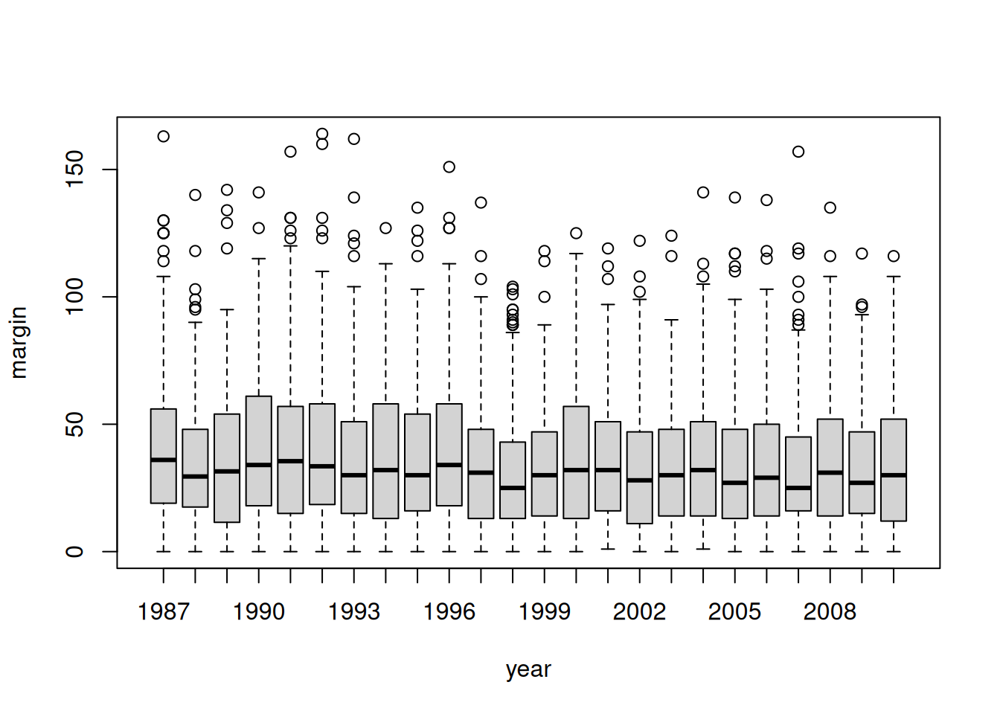
The result is shown in Figure 6.18.14 Even this, the default version of the plot, gives a sense of why it’s sometimes useful to choose boxplots instead of histograms. Even before taking the time to turn this basic output into something more readable, it’s possible to get a good sense of what the data look like from year to year without getting overwhelmed with too much detail. Now imagine what would have happened if I’d tried to cram 24 histograms into this space: no chance at all that the reader is going to learn anything useful.
14 Actually, there’s other ways to do this. If the input argument x is a list object (Chapter 7), the boxplot() function will draw a separate boxplot for each variable in that list. Relatedly, since the plot() function – which we’ll discuss shortly – is a generic (Chapter 4), you might not be surprised to learn that one of its special cases is a boxplot: specifically, if you use plot() where the first argument x is a factor and the second argument y is numeric, then the result will be a boxplot, showing the values in y, with a separate boxplot for each level. For instance, something like plot(x = afl2$year, y = afl2$margin) would work.
That being said, the default boxplot leaves a great deal to be desired in terms of visual clarity. The outliers are too visually prominent, the dotted lines look messy, and the interesting content (i.e., the behaviour of the median and the interquartile range across years) gets a little obscured. Fortunately, this is easy to fix, since we’ve already covered a lot of tools you can use to customise your output. After playing around with several different versions of the plot, the one I settled on is shown in Figure 6.19. The command I used to produce it is long, but not complicated:
boxplot(
formula = margin ~ year, # the formula
data = afl2, # the data set
xlab = "AFL season", # x axis label
ylab = "Winning Margin", # y axis label
frame.plot = FALSE, # don't draw a frame
staplewex = 0, # don't draw staples
staplecol = "white", # (fixes a tiny display issue)
boxwex = .75, # narrow the boxes slightly
boxfill = "grey80", # lightly shade the boxes
whisklty = 1, # solid line for whiskers
whiskcol = "grey70", # dim the whiskers
boxcol = "grey70", # dim the box borders
outcol = "grey70", # dim the outliers
outpch = 20, # outliers as solid dots
outcex = .5, # shrink the outliers
medlty = "blank", # no line for the medians
medpch = 20, # instead, draw solid dots
medlwd = 1.5 # make them larger
)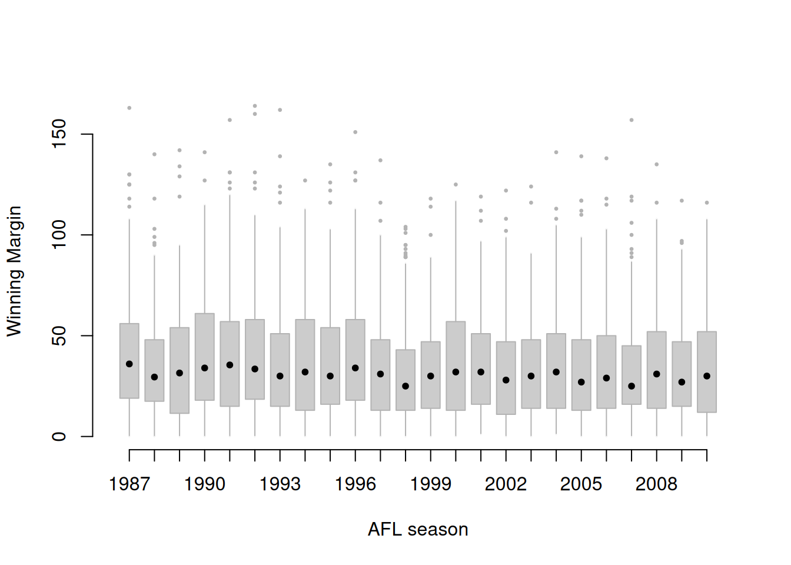
Fibonacci variable earlier). The size of outliers has been shrunk, because they aren’t actually very interesting. In contrast, I’ve added a fill colour to the boxes, to make it easier to look at the trend in the interquartile range across years.
Of course, given that the command is that long, you might have guessed that I didn’t spend ages typing all that rubbish in over and over again. Instead, I wrote a script, which I kept tweaking until it produced the figure that I wanted. We’ll talk about scripts later in Basic programming, but given the length of the command I thought I’d remind you that there’s an easier way of trying out different commands than typing them all in over and over.
Scatterplots are a simple but effective tool for visualising data. We’ve already seen scatterplots in this chapter, when using the plot() function to draw the Fibonacci variable as a collection of dots (Section 6.2). However, for the purposes of this section I have a slightly different notion in mind. Instead of just plotting one variable, what I want to do with my scatterplot is display the relationship between two variables, like we saw with the figures in the section on correlation (Section 5.7). It’s this latter application that we usually have in mind when we use the term “scatterplot”. In this kind of plot, each observation corresponds to one dot: the horizontal location of the dot plots the value of the observation on one variable, and the vertical location displays its value on the other variable. In many situations you don’t really have a clear opinion about what the causal relationship is (e.g., does A cause B, or does B cause A, or does some other variable C control both A and B). If that’s the case, it doesn’t really matter which variable you plot on the x-axis and which one you plot on the y-axis. However, in many situations you do have a pretty strong idea which variable you think is most likely to be causal, or at least you have some suspicions in that direction. If so, then it’s conventional to plot the cause variable on the x-axis, and the effect variable on the y-axis. With that in mind, let’s look at how to draw scatterplots in R, using the same parenthood data set (i.e. parenthood.Rdata) that I used when introducing the idea of correlations.
Suppose my goal is to draw a scatterplot displaying the relationship between the amount of sleep that I get (danielle_sleep) and how grumpy I am the next day (danielle_grump). As you might expect given our earlier use of plot() to display the Fibonacci data, the function that we use is the plot() function, but because it’s a generic function all the hard work is still being done by the plot.default() function. In any case, there are two different ways in which we can get the plot that we’re after. The first way is to specify the name of the variable to be plotted on the x axis and the variable to be plotted on the y axis. When we do it this way, the command looks like this:
plot(
x = parenthood$danielle_sleep, # data on the x-axis
y = parenthood$danielle_grump # data on the y-axis
)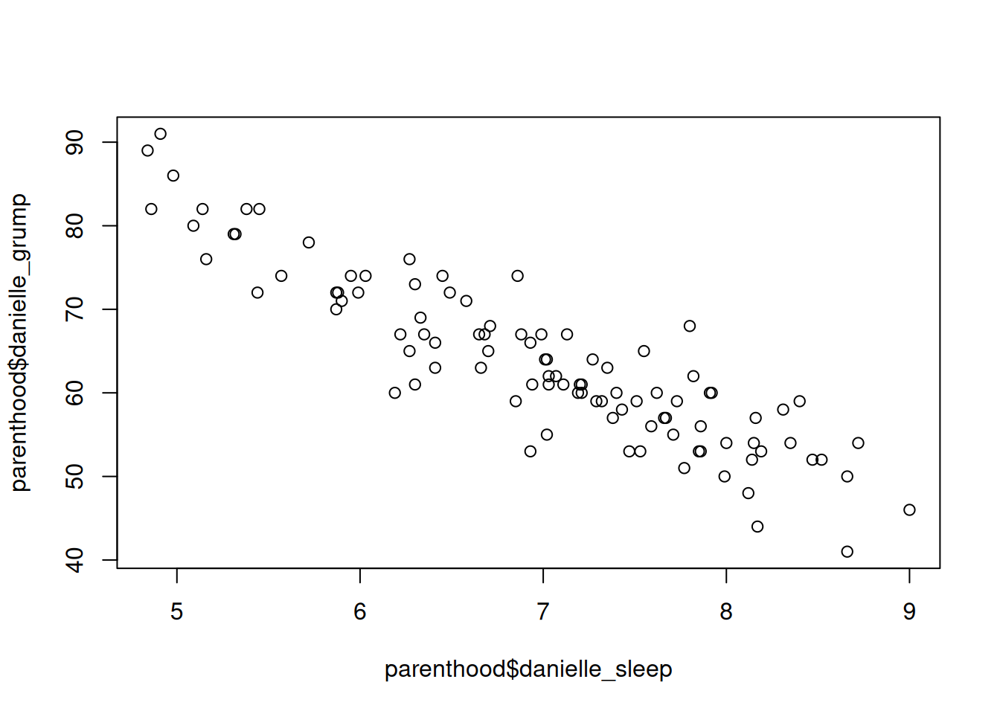
The second way to do it is to use a “formula and data frame” format, but I’m going to avoid using it.15 For now, let’s just stick with the x and y version. If we do this, the result is the very basic scatterplot shown in Figure 6.20. This serves fairly well, but there’s a few customisations that we probably want to make in order to have this work properly. As usual, we want to add some labels, but there’s a few other things we might want to do as well. Firstly, it’s sometimes useful to rescale the plots. In Figure 6.20 R has selected the scales so that the data fall neatly in the middle. But, in this case, we happen to know that the grumpiness measure falls on a scale from 0 to 100, and the hours slept falls on a natural scale between 0 hours and about 12 or so hours (the longest I can sleep in real life). So the command I might use to draw this is:
15 The reason is that there’s an annoying design flaw in the way the plot() function handles this situation. The problem is that the plot.formula() function uses different names for the arguments than the plot() function expects. As a consequence, you can’t specify the formula argument by name. If you just specify a formula as the first argument without using the name it works fine, because the plot() function thinks the formula corresponds to the x argument, and the plot.formula() function thinks it corresponds to the formula argument; and surprisingly, everything works nicely. But the moment that you, the user, try to be unambiguous about the name, one of those two functions is going to cry.
plot(
x = parenthood$danielle_sleep, # data on the x-axis
y = parenthood$danielle_grump, # data on the y-axis
xlab = "My sleep (hours)", # x-axis label
ylab = "My grumpiness (0-100)", # y-axis label
xlim = c(0, 12), # scale the x-axis
ylim = c(0, 100), # scale the y-axis
pch = 20, # change the plot type
col = "gray50", # dim the dots slightly
frame.plot = FALSE # don't draw a box
)
lines(
x = c(4, 9.5), # the horizontal locations
y = c(93, 37), # the vertical locations
lwd = 2 # line width
)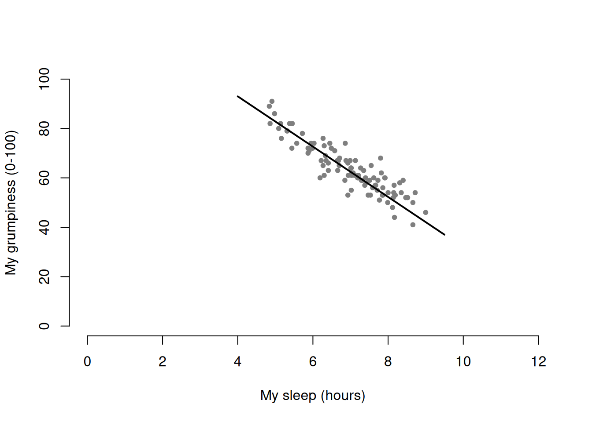
This command produces the scatterplot in Figure 6.21. What it doesn’t do on its own is draw the line through the middle of the points – that’s the job of lines(), which is a low level plotting function. Better yet, the arguments that I need to specify are pretty much the exact same ones that I use when calling the plot() function. That is, suppose that I want to draw a line that goes from the point (4,93) to the point (9.5,37). Then the x locations can be specified by the vector c(4,9.5) and the y locations correspond to the vector c(93,37), as shown in the command above. When I do so, R plots the line over the top of the plot that I drew using the previous command. In most realistic data analysis situations you absolutely don’t want to just guess where the line through the points goes, since there’s about a billion different ways in which you can get R to do a better job. However, it does at least illustrate the basic idea.
One possibility, if you do want to get R to draw nice clean lines through the data for you, is to use the scatterplot() function in the car package. Before we can use scatterplot() we need to load the package:
library(car)Loading required package: carDataHaving done so, we can now use the function. The command we need is this one:
scatterplot(
danielle_grump ~ danielle_sleep,
data = parenthood,
smooth = FALSE
)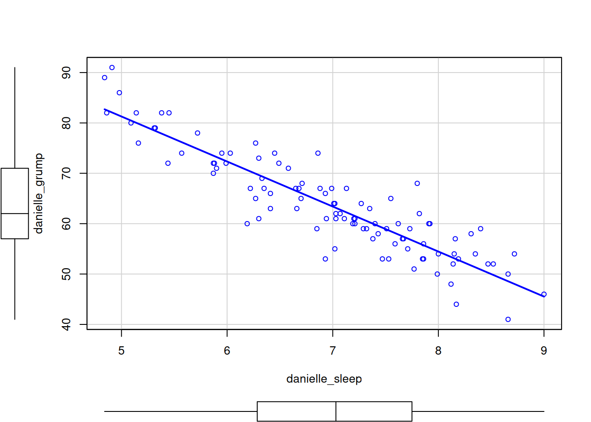
scatterplot() function in the car package.
The first two arguments should be familiar: the first input is a formula (danielle_grump ~ danielle_sleep) telling R what variables to plot,16 and the second specifies a data frame. The third argument smooth I’ve set to FALSE to stop the scatterplot() function from drawing a fancy “smoothed” trendline (since it’s a bit confusing to beginners). The scatterplot itself is shown in Figure 6.22. As you can see, it’s not only drawn the scatterplot, but it’s also drawn boxplots for each of the two variables, as well as a simple line of best fit showing the relationship between the two variables.
16 You might be wondering why I haven’t specified the argument name for the formula. The reason is that there’s a bug in how the scatterplot() function is written: under the hood there’s one function that expects the argument to be named x and another one that expects it to be called formula. I don’t know why the function was written this way, but it’s not an isolated problem: this particular kind of bug repeats itself in a couple of other functions (you’ll see it again in The \(t\)-test). The solution in such cases is to omit the argument name: that way, one function “thinks” that you’ve specified x and the other one “thinks” you’ve specified formula and everything works the way it’s supposed to. It’s not a great state of affairs, I’ll admit, but it sort of works.
Often you find yourself wanting to look at the relationships between several variables at once. One useful tool for doing so is to produce a scatterplot matrix, analogous to the correlation matrix.
cor(x = parenthood) # calculate correlation matrix danielle_sleep baby_sleep danielle_grump day
danielle_sleep 1.00000000 0.62794934 -0.90338404 -0.09840768
baby_sleep 0.62794934 1.00000000 -0.56596373 -0.01043394
danielle_grump -0.90338404 -0.56596373 1.00000000 0.07647926
day -0.09840768 -0.01043394 0.07647926 1.00000000We can get the corresponding scatterplot matrix by using the pairs() function:17
17 Yet again, we could have produced this output using the plot() function: when the x argument is a data frame containing numeric variables only, then the output is a scatterplot matrix. So, once again, what I could have done is just type plot( parenthood ).
pairs(x = parenthood) # draw corresponding scatterplot matrix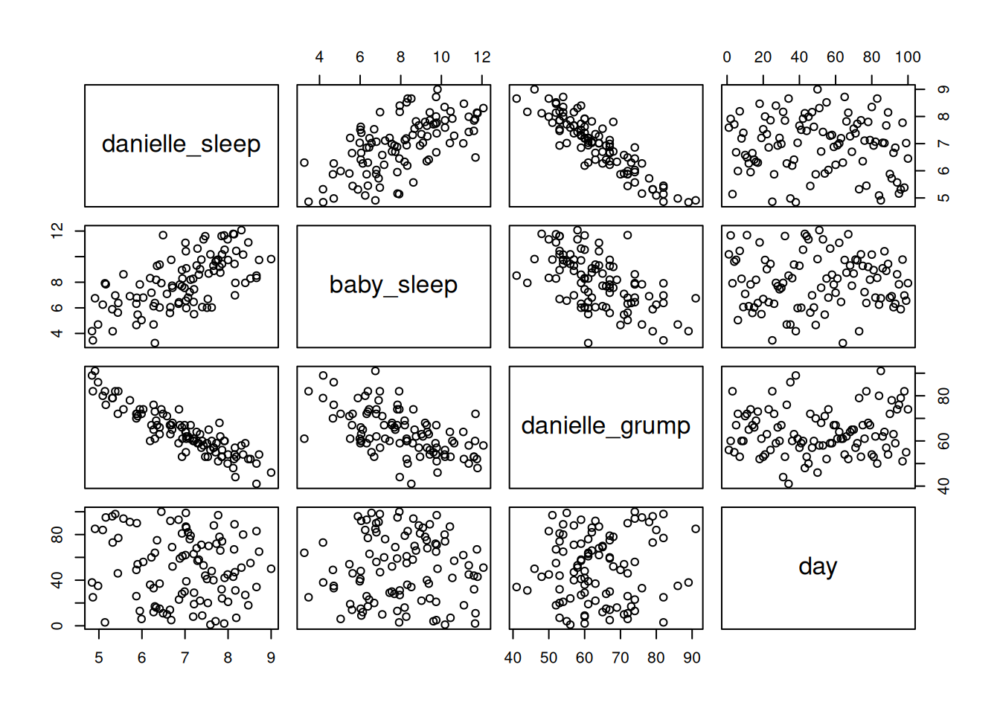
pairs().
The output of the pairs() command is shown in Figure 6.23. An alternative way of calling the pairs() function, which can be useful in some situations, is to specify the variables to include using a one-sided formula. For instance, this
pairs(
formula = ~ danielle_sleep + baby_sleep + danielle_grump,
data = parenthood
)would produce a \(3 \times 3\) scatterplot matrix that only compares danielle_sleep, danielle_grump and baby_sleep. Obviously, the first version is much easier, but there are cases where you really only want to look at a few of the variables, so it’s nice to use the formula interface.
Another form of graph that you often want to plot is the bar graph. The main function that you can use in R to draw them is the barplot() function.18 And to illustrate the use of the function, I’ll use the afl_finalists variable that I introduced in Section 5.1.7. What I want to do is draw a bar graph that displays the number of finals that each team has played in over the time spanned by the afl data set. So, let’s start by creating a vector that contains this information. I’ll use the tabulate() function to do this (which will be discussed properly in Chapter 7), since it creates a simple numeric vector:
18 Once again, it’s worth noting the link to the generic plot() function. If the x argument to plot() is a factor (and no y argument is given), the result is a bar graph. So you could use plot( afl_finalists ) and get the same output as barplot( afl_finalists ).
freq <- tabulate(afl_finalists)
print(freq) [1] 26 25 26 28 32 0 6 39 27 28 28 17 6 24 26 38 24This isn’t exactly the prettiest of frequency tables, of course. I’m only doing it this way so that you can see the barplot() function in its “purest” form: when the input is just an ordinary numeric vector. That being said, I’m obviously going to need the team names to create some labels, so let’s create a variable with those. I’ll do this using the levels() function, which outputs the names of all the levels of a factor (see Chapter 7):
teams <- levels(afl_finalists)
print(teams) [1] "Adelaide" "Brisbane" "Carlton" "Collingwood"
[5] "Essendon" "Fitzroy" "Fremantle" "Geelong"
[9] "Hawthorn" "Melbourne" "North Melbourne" "Port Adelaide"
[13] "Richmond" "St Kilda" "Sydney" "West Coast"
[17] "Western Bulldogs"Okay, so now that we have the information we need, let’s draw our bar graph. The main argument that you need to specify for a bar graph is the height of the bars, which in our case correspond to the values stored in the freq variable:
barplot(height = freq) # specifying the argument name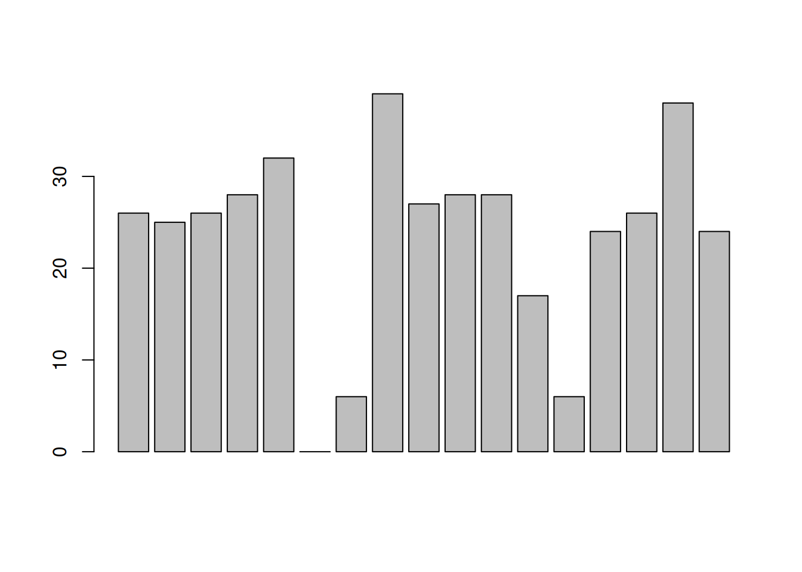
barplot(freq) # the lazier versionEither of these two commands will produce the simple bar graph shown in Figure 6.24. As you can see, R has drawn a pretty minimal plot. It doesn’t have any labels, obviously, because we didn’t actually tell the barplot() function what the labels are! To do this, we need to specify the names.arg argument. The names.arg argument needs to be a vector of character strings containing the text that needs to be used as the label for each of the items. In this case, the teams vector is exactly what we need, so the command we’re looking for is:
barplot(height = freq, names.arg = teams)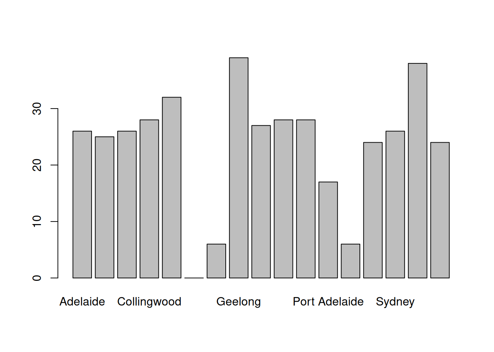
This is an improvement, but not much of an improvement. R has only included a few of the labels, because it can’t fit them in the plot. This is the same behaviour we saw earlier with the multiple-boxplot graph in Figure 6.18. However, in Figure 6.18 it wasn’t an issue: it’s pretty obvious from inspection that the two unlabelled plots in between 1987 and 1990 must correspond to the data from 1988 and 1989. However, the fact that barplot() has omitted the names of every team in between Adelaide and Fitzroy is a lot more problematic.
The simplest way to fix this is to rotate the labels, so that the text runs vertically not horizontally. To do this, we need to set the las parameter, which I discussed briefly in Section 6.2. What I’ll do is tell R to rotate the text so that it’s always perpendicular to the axes (i.e., I’ll set las = 2). When I do that, as per the following command…
barplot(
height = freq, # the frequencies
names.arg = teams, # the labels
las = 2 # rotate the labels
)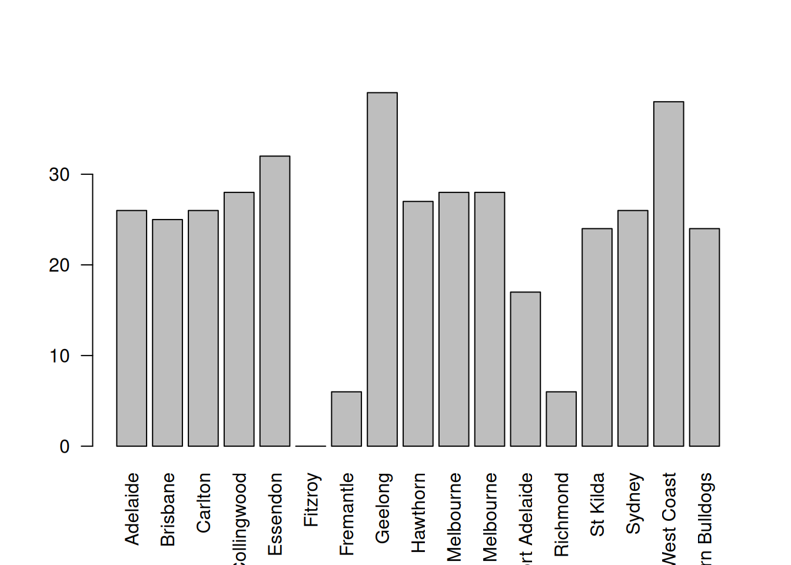
…the result is the bar graph shown in Figure 6.26. We’ve fixed the problem, but we’ve created a new one: the axis labels don’t quite fit anymore. To fix this, we have to be a bit cleverer again. A simple fix would be to use shorter names rather than the full name of all teams, and in many situations that’s probably the right thing to do. However, at other times you really do need to create a bit more space to add your labels, so I’ll show you how to do that.
par()Altering the margins to the plot is actually a somewhat more complicated exercise than you might think. In principle it’s a very simple thing to do: the size of the margins is governed by a graphical parameter called mar, so all we need to do is alter this parameter. First, let’s look at what the mar argument specifies. The mar argument is a vector containing four numbers: specifying the amount of space at the bottom, the left, the top and then the right. The units are “number of lines”. The default value for mar is c(5.1, 4.1, 4.1, 2.1), meaning that R leaves 5.1 “lines” empty at the bottom, 4.1 lines on the left and the top, and only 2.1 lines on the right. In order to make more room at the bottom, what I need to do is change the first of these numbers. A value of 10.1 should do the trick.
So far this doesn’t seem any different to the other graphical parameters that we’ve talked about. However, because of the way that the traditional graphics system in R works, you need to specify what the margins will be before calling your high-level plotting function. Unlike the other cases we’ve seen, you can’t treat mar as if it were just another argument in your plotting function. Instead, you have to use the par() function to change the graphical parameters beforehand, and only then try to draw your figure. In other words, the first thing I need to do is call par() to set the margin, and then call barplot() to draw the graph:
old_par <- par(mar = c(10.1, 4.1, 4.1, 2.1))
barplot(
height = freq, # the data to plot
names.arg = teams, # label the plots
las = 2, # rotate the labels
ylab = "Number of Finals", # y axis label
main = "Finals Played, 1987-2010", # figure title
density = 10, # shade the bars
angle = 20 # shading lines angle
)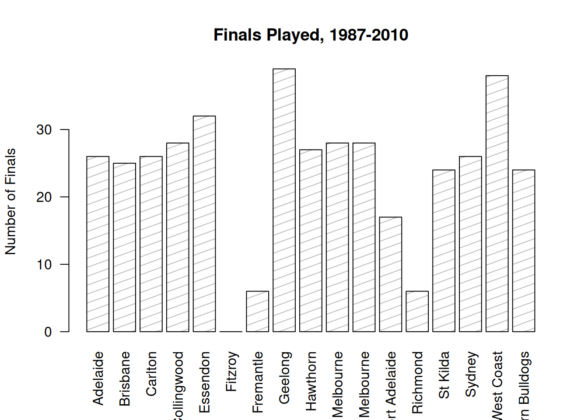
The par() line itself produces no visible output, but behind the scenes R has changed the graphical parameters associated with the current device (remember, in R terminology all graphics are drawn onto a “device”). Because that change persists for any later plot drawn to the same device, the labels on the bar graph above now fit, because R leaves twice as much room for them at the bottom. And since I’ve already figured out how to get the labels to display properly, I might as well play around with some of the other options while I’m at it, all of which are things you’ve seen before.
However, one thing to remember about the par() function is that it doesn’t just change the graphical parameters for the current plot. Rather, the changes pertain to any subsequent plot that you draw onto the same device. This might be exactly what you want, in which case there’s no problem. But if not, you need to reset the graphical parameters to their original settings. To do this, you can either close the device (e.g., close the window, or click the “Clear All” button in the Plots panel in Rstudio) or you can reset the graphical parameters to their original values, using a command like this:
par(old_par)Hold on, you might be thinking. What’s the good of being able to draw pretty pictures in R if I can’t save them and send them to friends to brag about how awesome my data is? How do I save the picture? This is another one of those situations where the easiest thing to do is to use the Rstudio tools.
If you’re running R through Rstudio, then the easiest way to save your image is to click on the “Export” button in the Plot panel (i.e., the area in Rstudio where all the plots have been appearing). When you do that you’ll see a menu that contains the options “Save Plot as PDF” and “Save Plot as Image”. Either version works. Both will bring up dialog boxes that give you a few options that you can play with, but besides that it’s pretty simple.
This works pretty nicely for most situations. So, unless you’re filled with a burning desire to learn the low level details, feel free to skip the rest of this section.
As I say, the menu-based options should be good enough for most people most of the time. However, one day you might want to be a bit more sophisticated, and make use of R’s image writing capabilities at a lower level. In this section I’ll give you a very basic introduction to this. In all honesty, this barely scratches the surface, but it will help a little bit in getting you started if you want to learn the details.
Okay, as I hinted earlier, whenever you’re drawing pictures in R you’re deemed to be drawing to a device of some kind. There are devices that correspond to a figure drawn on screen, and there are devices that correspond to graphics files that R will produce for you. For the purposes of this section I’ll assume that you’re using the default application in either Windows or Mac OS, not Rstudio. The reason for this is that my experience with the graphical device provided by Rstudio has led me to suspect that it still has a bunch of non-standard (or possibly just undocumented) features, and so I don’t quite trust that it always does what I expect. I’ve no doubt they’ll smooth it out later, but I can honestly say that I don’t quite get what’s going on with the RStudioGD device. In any case, we can ask R to list all of the graphics devices that currently exist, simply by using the command dev.list(). If there are no figure windows open, then you’ll see this:19
19 The commands in the rest of this section describe how R’s graphics devices behave on Windows and Mac OS, and their output depends on which of those systems – and which graphical device – you happen to be running. Because of that, they’re shown here as an illustrative transcript rather than as live code: running them in this book’s own (headless, Linux-based) rendering environment wouldn’t reproduce the Windows/Mac behaviour being described.
> dev.list()
NULLwhich just means that R doesn’t have any graphics devices open. However, suppose if you’ve just drawn a histogram and you type the same command, R will now give you a different answer. For instance, if you’re using Windows:
> hist(afl_margins)
> dev.list()
windows
2 What this means is that there is one graphics device (device 2) that is currently open, and it’s a figure window. If you did the same thing on a Mac, you get basically the same answer, except that the name of the device would be quartz rather than windows. If you had several graphics windows open (which, incidentally, you can do by using the dev.new() command) then you’d see something like this:
> dev.list()
windows windows windows
2 3 4 Okay, so that’s the basic idea behind graphics devices. The key idea here is that graphics files (like JPEG images etc) are also graphics devices as far as R is concerned. So what you want to do is to copy the contents of one graphics device to another one. There’s a command called dev.copy() that does this, but what I’ll explain to you is a simpler one called dev.print(). It’s pretty simple:
dev.print(
device = jpeg, # what are we printing to?
filename = "thisfile.jpg", # name of the image file
width = 480, # how many pixels wide should it be
height = 300 # how many pixels high should it be
)This takes the “active” figure window, copies it to a jpeg file (which R treats as a device) and then closes that device. The filename = "thisfile.jpg" part tells R what to name the graphics file, and the width = 480 and height = 300 arguments tell R to draw an image that is 300 pixels high and 480 pixels wide. If you want a different kind of file, just change the device argument from jpeg to something else. R has devices for png, tiff and bmp that all work in exactly the same way as the jpeg command, but produce different kinds of files. Actually, for simple cartoonish graphics like this histogram, you’d be better advised to use PNG or TIFF over JPEG. The JPEG format is very good for natural images, but is wasteful for simple line drawings. The information above probably covers most things you might want to know. However, if you want more information about what kinds of options you can specify using R, have a look at the help documentation by typing ?jpeg or ?tiff or whatever.
At the start of the chapter I mentioned that R has several completely distinct systems for drawing figures. In this chapter I’ve focused on the traditional (base) graphics system. It’s the easiest one to get started with: you can draw a histogram with a command as simple as hist(x). When I originally wrote this chapter in the early 2010s, I described ggplot2 as one of the more popular alternatives, loosely based on “The grammar of graphics” (Wilkinson et al., 2006), and warned that it wasn’t for novices: you needed a pretty good grasp of R before it was worth the investment.
That warning has not aged well at all!
Over the years since, ggplot2 (Wickham, 2016) has gone from being one option among several to being the default choice for most R users doing data visualisation, to the point that plenty of people now learn ggplot2 before they ever touch plot() or hist(). Its layered “grammar of graphics” approach – build a plot by adding geoms, scales, and facets to a base specification, rather than issuing a sequence of drawing commands – turns out to compose extremely well once you’re plotting anything more complicated than a single scatterplot: adding a colour mapping, a trend line, or a panel per group is a small, predictable change to the code rather than a new set of function calls to learn. It’s also grown a large ecosystem of extension packages (patchwork for arranging multiple plots, gganimate for animation, ggrepel for decluttering text labels, and dozens more) that all speak the same grammar. None of this makes the base graphics system in this chapter wrong, or even obsolete for quick, one-off plots – hist(x) is still faster to type than the ggplot2 equivalent – but if you go looking for R graphics code in the wild today, especially anywhere touched by the “tidyverse” (more on that in the epilogue to the next chapter), you’ll find far more ggplot2 than base graphics.
Those remarks notwithstanding, I have good news for you. If this chapter has left you comfortable with the underlying ideas of what a good statistical graphic looks like, learning ggplot2’s particular syntax on top of that will turn out to be a lot easier than you might think.
Perhaps I’m a simple minded person, but I love pictures. Every time I write a new scientific paper, one of the first things I do is sit down and think about what the pictures will be. In my head, an article is really just a sequence of pictures, linked together by a story. All the rest of it is just window dressing. What I’m really trying to say here is that the human visual system is a very powerful data analysis tool. Give it the right kind of information and it will supply a human reader with a massive amount of knowledge very quickly. Not for nothing do we have the saying “a picture is worth a thousand words”. With that in mind, I think that this is one of the most important chapters in the book. The topics covered were: